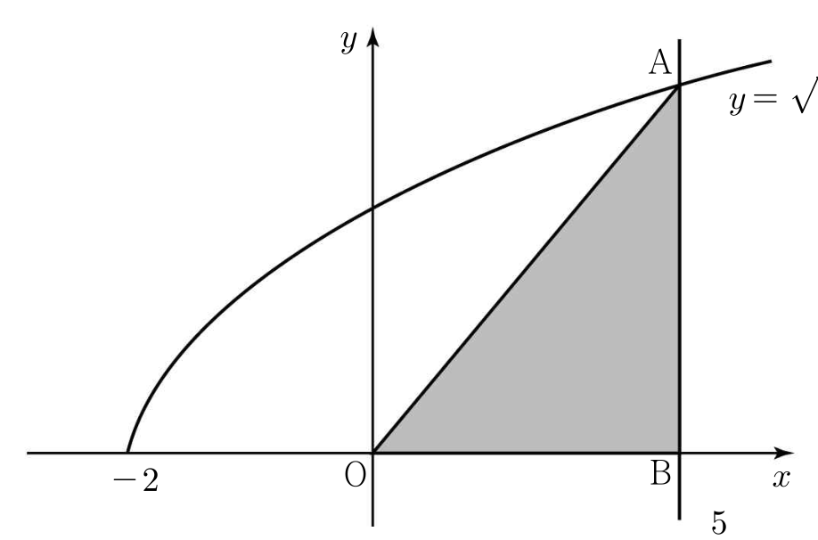
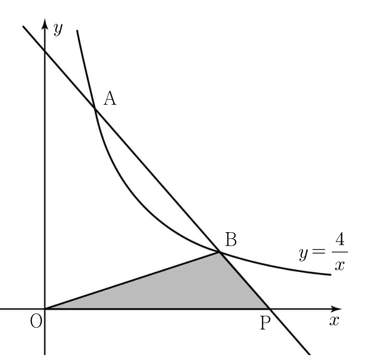

원본 (내부용)두 집합 $A= \{ 1,2,3 \}$, $B= \{ 2,3,4 \}$에 대하여 집합 $A \cap B$의 모든 원소의 합은? [2점]
① $3$② $4$③ $5$④ $6$⑤ $7$
원본 정답 ③
원본 풀이 (내부용)[출제의도] 교집합 이해하기
\(A\cap B=\{2,3\}\)이므로 \(2+3=5\)이다.
생성기 숫자판 1/6 · G2H-03#0두 집합 $A=\left\{6,\ 8,\ 9,\ 10,\ 14,\ 15\right\}$, $B=\left\{4,\ 5,\ 8,\ 10,\ 16\right\}$에 대하여 집합 $A\cap B$의 모든 원소의 합으로 옳은 것을 고르세요.
① $15$② $16$③ $17$④ $18$⑤ $19$
정답④ $18$ $A\cap B=\left\{8,\ 10\right\}$이므로 모든 원소의 합은 $8+10=18$
생성기 숫자판 1/6 · G2M8-03#3수열 $\left\{a_{n}\right\}$이 모든 자연수 $n$에 대하여 부등식 $4n-1<a_{n}<4n+1$을 만족시킬 때, $\lim_{n\to\infty}\frac{a_{n}}{n}$의 값으로 옳은 것을 고르세요.
① $2$② $3$③ $4$④ $5$⑤ $6$
정답③ $4$ $4n-1<a_{n}<4n+1$의 각 변을 $n$으로 나누면 $4-\frac{1}{n}<\frac{a_{n}}{n}<4+\frac{1}{n}$ $\lim_{n\to\infty}\left(4-\frac{1}{n}\right)=4$, $\lim_{n\to\infty}\left(4+\frac{1}{n}\right)=4$ 수열의 극한의 대소 관계에 의하여 $\lim_{n\to\infty}\frac{a_{n}}{n}=4$
숫자: 원본 6 1 6 1 → 쌍둥이 4 1 4 1 · 같은 수: 1
생성기 숫자판 2/6 · G2M8-03#3수열 $\left\{a_{n}\right\}$이 모든 자연수 $n$에 대하여 부등식 $5n-2<a_{n}<5n+2$를 만족시킬 때, $\lim_{n\to\infty}\frac{a_{n}}{n}$의 값으로 옳은 것을 고르세요.
① $3$② $4$③ $5$④ $6$⑤ $7$
정답③ $5$ $5n-2<a_{n}<5n+2$의 각 변을 $n$으로 나누면 $5-\frac{2}{n}<\frac{a_{n}}{n}<5+\frac{2}{n}$ $\lim_{n\to\infty}\left(5-\frac{2}{n}\right)=5$, $\lim_{n\to\infty}\left(5+\frac{2}{n}\right)=5$ 수열의 극한의 대소 관계에 의하여 $\lim_{n\to\infty}\frac{a_{n}}{n}=5$
숫자: 원본 6 1 6 1 → 쌍둥이 5 2 5 2
생성기 숫자판 3/6 · G2M8-03#3수열 $\left\{a_{n}\right\}$이 모든 자연수 $n$에 대하여 부등식 $2n-2<a_{n}<2n+2$를 만족시킬 때, $\lim_{n\to\infty}\frac{a_{n}}{n}$의 값으로 옳은 것을 고르세요.
① $1$② $2$③ $3$④ $4$⑤ $5$
정답② $2$ $2n-2<a_{n}<2n+2$의 각 변을 $n$으로 나누면 $2-\frac{2}{n}<\frac{a_{n}}{n}<2+\frac{2}{n}$ $\lim_{n\to\infty}\left(2-\frac{2}{n}\right)=2$, $\lim_{n\to\infty}\left(2+\frac{2}{n}\right)=2$ 수열의 극한의 대소 관계에 의하여 $\lim_{n\to\infty}\frac{a_{n}}{n}=2$
숫자: 원본 6 1 6 1 → 쌍둥이 2 2 2 2
생성기 숫자판 4/6 · G2M8-03#3수열 $\left\{a_{n}\right\}$이 모든 자연수 $n$에 대하여 부등식 $7n-1<a_{n}<7n+1$을 만족시킬 때, $\lim_{n\to\infty}\frac{a_{n}}{n}$의 값으로 옳은 것을 고르세요.
① $5$② $6$③ $7$④ $8$⑤ $9$
정답③ $7$ $7n-1<a_{n}<7n+1$의 각 변을 $n$으로 나누면 $7-\frac{1}{n}<\frac{a_{n}}{n}<7+\frac{1}{n}$ $\lim_{n\to\infty}\left(7-\frac{1}{n}\right)=7$, $\lim_{n\to\infty}\left(7+\frac{1}{n}\right)=7$ 수열의 극한의 대소 관계에 의하여 $\lim_{n\to\infty}\frac{a_{n}}{n}=7$
숫자: 원본 6 1 6 1 → 쌍둥이 7 1 7 1 · 같은 수: 1
생성기 숫자판 5/6 · G2M8-03#3수열 $\left\{a_{n}\right\}$이 모든 자연수 $n$에 대하여 부등식 $9n-1<a_{n}<9n+1$을 만족시킬 때, $\lim_{n\to\infty}\frac{a_{n}}{n}$의 값으로 옳은 것을 고르세요.
① $7$② $8$③ $9$④ $10$⑤ $11$
정답③ $9$ $9n-1<a_{n}<9n+1$의 각 변을 $n$으로 나누면 $9-\frac{1}{n}<\frac{a_{n}}{n}<9+\frac{1}{n}$ $\lim_{n\to\infty}\left(9-\frac{1}{n}\right)=9$, $\lim_{n\to\infty}\left(9+\frac{1}{n}\right)=9$ 수열의 극한의 대소 관계에 의하여 $\lim_{n\to\infty}\frac{a_{n}}{n}=9$
숫자: 원본 6 1 6 1 → 쌍둥이 9 1 9 1 · 같은 수: 1
생성기 숫자판 6/6 · G2M8-03#3수열 $\left\{a_{n}\right\}$이 모든 자연수 $n$에 대하여 부등식 $3n-3<a_{n}<3n+3$을 만족시킬 때, $\lim_{n\to\infty}\frac{a_{n}}{n}$의 값으로 옳은 것을 고르세요.
① $1$② $2$③ $3$④ $4$⑤ $5$
정답③ $3$ $3n-3<a_{n}<3n+3$의 각 변을 $n$으로 나누면 $3-\frac{3}{n}<\frac{a_{n}}{n}<3+\frac{3}{n}$ $\lim_{n\to\infty}\left(3-\frac{3}{n}\right)=3$, $\lim_{n\to\infty}\left(3+\frac{3}{n}\right)=3$ 수열의 극한의 대소 관계에 의하여 $\lim_{n\to\infty}\frac{a_{n}}{n}=3$
숫자: 원본 6 1 6 1 → 쌍둥이 3 3 3 3
6. 2018년 6월 나형 6번 · 3점 · 고1 범위 · 함수 · G2H-04#0
원본 (내부용)함수 $f ( x ) =2x-1$에 대하여 $f^{-1} ( 3 )$의 값은? [3점]
① $-2$② $-1$③ $0$④ $1$⑤ $2$
원본 정답 ⑤
원본 풀이 (내부용)[출제의도] 역함수 계산하기
\(f^{-1}(3)=a\)라 하면 \(f(a)=3\)이므로
\(
f(a)=2a-1=3
\)
에서 \(a=2\)이다. 따라서 \(f^{-1}(3)=2\)이다.
생성기 숫자판 1/6 · G2H-04#0함수 $f\left(x\right)=4x+4$에 대하여 $f^{-1}\left(-4\right)$의 값으로 옳은 것을 고르세요.
① $-2$② $-1$③ $0$④ $1$⑤ $2$
정답① $-2$ $f^{-1}\left(-4\right)=k$라 하면 $f\left(k\right)=-4$ $4k+4=-4$이므로 $k=-2$
숫자: 원본 2 1 1 3 → 쌍둥이 4 4 1 4 · 같은 수: 1
생성기 숫자판 2/6 · G2H-04#0함수 $f\left(x\right)=2x-4$에 대하여 $f^{-1}\left(-6\right)$의 값으로 옳은 것을 고르세요.
① $-2$② $-1$③ $0$④ $1$⑤ $2$
정답② $-1$ $f^{-1}\left(-6\right)=k$라 하면 $f\left(k\right)=-6$ $2k-4=-6$이므로 $k=-1$
숫자: 원본 2 1 1 3 → 쌍둥이 2 4 1 6 · 같은 수: 1 2
생성기 숫자판 3/6 · G2H-04#0함수 $f\left(x\right)=3x+5$에 대하여 $f^{-1}\left(2\right)$의 값으로 옳은 것을 고르세요.
① $-1$② $0$③ $1$④ $2$⑤ $3$
정답① $-1$ $f^{-1}\left(2\right)=k$라 하면 $f\left(k\right)=2$ $3k+5=2$이므로 $k=-1$
숫자: 원본 2 1 1 3 → 쌍둥이 3 5 1 2 · 같은 수: 1 2 3
생성기 숫자판 4/6 · G2H-04#0함수 $f\left(x\right)=3x-1$에 대하여 $f^{-1}\left(-4\right)$의 값으로 옳은 것을 고르세요.
① $-2$② $-1$③ $0$④ $1$⑤ $2$
정답② $-1$ $f^{-1}\left(-4\right)=k$라 하면 $f\left(k\right)=-4$ $3k-1=-4$이므로 $k=-1$
숫자: 원본 2 1 1 3 → 쌍둥이 3 1 1 4 · 같은 수: 1 3
생성기 숫자판 5/6 · G2H-04#0함수 $f\left(x\right)=3x+5$에 대하여 $f^{-1}\left(8\right)$의 값으로 옳은 것을 고르세요.
① $0$② $1$③ $2$④ $3$⑤ $4$
정답② $1$ $f^{-1}\left(8\right)=k$라 하면 $f\left(k\right)=8$ $3k+5=8$이므로 $k=1$
숫자: 원본 2 1 1 3 → 쌍둥이 3 5 1 8 · 같은 수: 1 3
생성기 숫자판 6/6 · G2H-04#0함수 $f\left(x\right)=4x-3$에 대하여 $f^{-1}\left(1\right)$의 값으로 옳은 것을 고르세요.
① $-2$② $-1$③ $0$④ $1$⑤ $2$
정답④ $1$ $f^{-1}\left(1\right)=k$라 하면 $f\left(k\right)=1$ $4k-3=1$이므로 $k=1$
숫자: 원본 2 1 1 3 → 쌍둥이 4 3 1 1 · 같은 수: 1 3
7. 2018년 6월 나형 7번 · 3점 · 수학Ⅱ 함수의 극한·연속 · G2f-15#1
원본 (내부용)함수 $y=f ( x )$의 그래프가 그림과 같다. $\mathrm{O}$ $x$ $y$ $y=f ( x )$ $1$ $-1$ $2$ $-2$ $1$ $f ( 1 ) + \lim_{x \to 0-} {f ( x )}$의 값은? [3점]
① $-2$② $-1$③ $0$④ $1$⑤ $2$
원본 정답 ③
원본 풀이 (내부용)[출제의도] 함수의 극한 이해하기
주어진 그래프로부터 \(f(1)=1,\ \lim_{x\to0}f(x)=-1\)이다. 따라서
\(
f(1)+\lim_{x\to0}f(x)=1+(-1)=0
\)
이다.
생성기 숫자판 1/6 · G2f-15#1함수 $y=f\left(x\right)$의 그래프가 그림과 같습니다. $f\left(0\right)+\lim_{x\to 2^{+}}f\left(x\right)$의 값으로 옳은 것을 고르세요.
① $-2$② $-1$③ $0$④ $1$⑤ $2$
정답③ $0$ $f\left(0\right)=2$ $x\to 2^{+}$일 때 $f\left(x\right)\to -2$ 따라서 구하는 값은 $2-2=0$
숫자: 원본 1 1 2 2 1 1 0 → 쌍둥이 0 2 · 같은 수: 0 2
생성기 숫자판 2/6 · G2f-15#1함수 $y=f\left(x\right)$의 그래프가 그림과 같습니다. $f\left(1\right)+\lim_{x\to 0^{+}}f\left(x\right)$의 값으로 옳은 것을 고르세요.
① $3$② $4$③ $5$④ $6$⑤ $7$
정답③ $5$ $f\left(1\right)=2$ $x\to 0^{+}$일 때 $f\left(x\right)\to 3$ 따라서 구하는 값은 $2+3=5$
숫자: 원본 1 1 2 2 1 1 0 → 쌍둥이 1 0 · 같은 수: 0 1
생성기 숫자판 3/6 · G2f-15#1함수 $y=f\left(x\right)$의 그래프가 그림과 같습니다. $f\left(0\right)+\lim_{x\to 2^{-}}f\left(x\right)$의 값으로 옳은 것을 고르세요.
① $2$② $3$③ $4$④ $5$⑤ $6$
정답③ $4$ $f\left(0\right)=3$ $x\to 2^{-}$일 때 $f\left(x\right)\to 1$ 따라서 구하는 값은 $3+1=4$
숫자: 원본 1 1 2 2 1 1 0 → 쌍둥이 0 2 · 같은 수: 0 2
생성기 숫자판 4/6 · G2f-15#1함수 $y=f\left(x\right)$의 그래프가 그림과 같습니다. $f\left(0\right)+\lim_{x\to 1^{-}}f\left(x\right)$의 값으로 옳은 것을 고르세요.
① $2$② $3$③ $4$④ $5$⑤ $6$
정답③ $4$ $f\left(0\right)=3$ $x\to 1^{-}$일 때 $f\left(x\right)\to 1$ 따라서 구하는 값은 $3+1=4$
숫자: 원본 1 1 2 2 1 1 0 → 쌍둥이 0 1 · 같은 수: 0 1
생성기 숫자판 5/6 · G2f-15#1함수 $y=f\left(x\right)$의 그래프가 그림과 같습니다. $f\left(0\right)+\lim_{x\to 1^{-}}f\left(x\right)$의 값으로 옳은 것을 고르세요.
① $2$② $3$③ $4$④ $5$⑤ $6$
정답③ $4$ $f\left(0\right)=3$ $x\to 1^{-}$일 때 $f\left(x\right)\to 1$ 따라서 구하는 값은 $3+1=4$
숫자: 원본 1 1 2 2 1 1 0 → 쌍둥이 0 1 · 같은 수: 0 1
생성기 숫자판 6/6 · G2f-15#1함수 $y=f\left(x\right)$의 그래프가 그림과 같습니다. $f\left(2\right)+\lim_{x\to 0^{+}}f\left(x\right)$의 값으로 옳은 것을 고르세요.
① $2$② $3$③ $4$④ $5$⑤ $6$
정답③ $4$ $f\left(2\right)=1$ $x\to 0^{+}$일 때 $f\left(x\right)\to 3$ 따라서 구하는 값은 $1+3=4$
숫자: 원본 1 1 2 2 1 1 0 → 쌍둥이 2 0 · 같은 수: 0 2
8. 2018년 6월 나형 8번 · 3점 · 고1 범위 · 유리함수와 무리함수 · G2M10-01#6
원본 (내부용)그림과 같이 직선 $x= \frac{5}{2}$와 곡선 $y= \sqrt{2x+4}$가 만나는 점을 $\mathrm{A}$, 직선 $x= \frac{5}{2}$와 $x$축이 만나는 점을 $\mathrm{B}$라 할 때, 삼각형 $\mathrm{AOB}$의 넓이는? (단, $\mathrm{O}$는 원점이다.) [3점] $\mathrm{O}$ $-2$ $x= \frac{5}{2}$ $\mathrm{B}$ $\mathrm{A}$ $y= \sqrt{2x+4}$ $y$ $x$

① $3$② $\frac{13}{4}$③ $\frac{7}{2}$④ $\frac{15}{4}$⑤ $4$
원본 정답 ④
원본 풀이 (내부용)[출제의도] 무리함수의 그래프 이해하기
\(
\overline{AB}=\sqrt{2\times\frac52+4}=3
\)
이므로 삼각형 \(AOB\)의 넓이는
\(
\frac12\times\frac52\times3=\frac{15}{4}
\)
이다.
생성기 숫자판 1/6 · G2M10-01#6직선 $x=4$와 곡선 $y=\sqrt{x+5}$가 만나는 점을 $\mathrm{A}$, 직선 $x=4$와 $x$축이 만나는 점을 $\mathrm{B}$라 할 때, 삼각형 $\mathrm{AOB}$의 넓이로 옳은 것을 고르세요. (단, $\mathrm{O}$는 원점입니다.)
① $\frac{11}{2}$② $\frac{23}{4}$③ $6$④ $\frac{25}{4}$⑤ $\frac{13}{2}$
정답③ $6$ $x=4$일 때 $y=\sqrt{4+5}=3$이므로 $\mathrm{A}\left(4,\ 3\right)$, $\mathrm{B}\left(4,\ 0\right)$ 삼각형 $\mathrm{AOB}$의 넓이는 $\frac{1}{2}\times 4\times 3=6$
생성기 숫자판 2/6 · G2M10-01#6직선 $x=3$과 곡선 $y=\sqrt{x+6}$이 만나는 점을 $\mathrm{A}$, 직선 $x=3$과 $x$축이 만나는 점을 $\mathrm{B}$라 할 때, 삼각형 $\mathrm{AOB}$의 넓이로 옳은 것을 고르세요. (단, $\mathrm{O}$는 원점입니다.)
① $4$② $\frac{17}{4}$③ $\frac{9}{2}$④ $\frac{19}{4}$⑤ $5$
정답③ $\frac{9}{2}$ $x=3$일 때 $y=\sqrt{3+6}=3$이므로 $\mathrm{A}\left(3,\ 3\right)$, $\mathrm{B}\left(3,\ 0\right)$ 삼각형 $\mathrm{AOB}$의 넓이는 $\frac{1}{2}\times 3\times 3=\frac{9}{2}$
숫자: 원본 5 2 2 4 5 2 2 5 2 2 4 → 쌍둥이 3 6 3
생성기 숫자판 3/6 · G2M10-01#6직선 $x=3$과 곡선 $y=\sqrt{x+1}$이 만나는 점을 $\mathrm{A}$, 직선 $x=3$과 $x$축이 만나는 점을 $\mathrm{B}$라 할 때, 삼각형 $\mathrm{AOB}$의 넓이로 옳은 것을 고르세요. (단, $\mathrm{O}$는 원점입니다.)
① $\frac{11}{4}$② $3$③ $\frac{13}{4}$④ $\frac{7}{2}$⑤ $\frac{15}{4}$
정답② $3$ $x=3$일 때 $y=\sqrt{3+1}=2$이므로 $\mathrm{A}\left(3,\ 2\right)$, $\mathrm{B}\left(3,\ 0\right)$ 삼각형 $\mathrm{AOB}$의 넓이는 $\frac{1}{2}\times 3\times 2=3$
숫자: 원본 5 2 2 4 5 2 2 5 2 2 4 → 쌍둥이 3 1 3
생성기 숫자판 4/6 · G2M10-01#6직선 $x=\frac{1}{2}$과 곡선 $y=\sqrt{2x+3}$이 만나는 점을 $\mathrm{A}$, 직선 $x=\frac{1}{2}$과 $x$축이 만나는 점을 $\mathrm{B}$라 할 때, 삼각형 $\mathrm{AOB}$의 넓이로 옳은 것을 고르세요. (단, $\mathrm{O}$는 원점입니다.)
① $\frac{1}{4}$② $\frac{1}{2}$③ $\frac{3}{4}$④ $1$⑤ $\frac{5}{4}$
정답② $\frac{1}{2}$ $x=\frac{1}{2}$일 때 $y=\sqrt{1+3}=2$이므로 $\mathrm{A}\left(\frac{1}{2},\ 2\right)$, $\mathrm{B}\left(\frac{1}{2},\ 0\right)$ 삼각형 $\mathrm{AOB}$의 넓이는 $\frac{1}{2}\times \frac{1}{2}\times 2=\frac{1}{2}$
생성기 숫자판 5/6 · G2M10-01#6직선 $x=1$과 곡선 $y=\sqrt{2x+2}$가 만나는 점을 $\mathrm{A}$, 직선 $x=1$과 $x$축이 만나는 점을 $\mathrm{B}$라 할 때, 삼각형 $\mathrm{AOB}$의 넓이로 옳은 것을 고르세요. (단, $\mathrm{O}$는 원점입니다.)
① $1$② $\frac{5}{4}$③ $\frac{3}{2}$④ $\frac{7}{4}$⑤ $2$
정답① $1$ $x=1$일 때 $y=\sqrt{2+2}=2$이므로 $\mathrm{A}\left(1,\ 2\right)$, $\mathrm{B}\left(1,\ 0\right)$ 삼각형 $\mathrm{AOB}$의 넓이는 $\frac{1}{2}\times 1\times 2=1$
생성기 숫자판 6/6 · G2M10-01#6직선 $x=\frac{3}{2}$과 곡선 $y=\sqrt{2x+6}$이 만나는 점을 $\mathrm{A}$, 직선 $x=\frac{3}{2}$과 $x$축이 만나는 점을 $\mathrm{B}$라 할 때, 삼각형 $\mathrm{AOB}$의 넓이로 옳은 것을 고르세요. (단, $\mathrm{O}$는 원점입니다.)
① $\frac{9}{4}$② $\frac{5}{2}$③ $\frac{11}{4}$④ $3$⑤ $\frac{13}{4}$
정답① $\frac{9}{4}$ $x=\frac{3}{2}$일 때 $y=\sqrt{3+6}=3$이므로 $\mathrm{A}\left(\frac{3}{2},\ 3\right)$, $\mathrm{B}\left(\frac{3}{2},\ 0\right)$ 삼각형 $\mathrm{AOB}$의 넓이는 $\frac{1}{2}\times \frac{3}{2}\times 3=\frac{9}{4}$
원본 (내부용)수열 $\{ a_{n} \}$에 대하여 $\sum_{k=1}^{n} a_{k} =2^{n+1} -2$일 때, $a_{5}$의 값은? [3점]
① $30$② $32$③ $34$④ $36$⑤ $38$
원본 정답 ②
원본 풀이 (내부용)[출제의도] 수열의 합과 일반항 사이의 관계 이해하기
\(n=5\)일 때,
\(
\sum_{k=1}^{5}a_k=2^6-2
\)
이고 \(n=4\)일 때,
\(
\sum_{k=1}^{4}a_k=2^5-2
\)
이므로
\(
a_5=\sum_{k=1}^{5}a_k-\sum_{k=1}^{4}a_k
=(2^6-2)-(2^5-2)=32
\)
이다.
생성기 숫자판 1/6 · G2M6-03#14수열 $\left\{a_{n}\right\}$에 대하여 $\sum_{k=1}^{n}a_{k}=2^{n}-1$일 때, $a_{4}$의 값으로 옳은 것을 고르세요.
원본 (내부용)실수 $x$에 대한 두 조건 $p$:$x^{2} -7x+10<0$, $q$:$x>a$ 에 대하여 $p$가 $q$이기 위한 충분조건이 되도록 하는 자연수 $a$의 최댓값은? [3점]
① $1$② $2$③ $3$④ $4$⑤ $5$
원본 정답 ②
원본 풀이 (내부용)[출제의도] 충분조건 이해하기
두 조건 \(p,\ q\)의 진리집합을 각각 \(P,\ Q\)라 하자.
조건 \(p:x^2-7x+10<0\)에서
\(
(x-2)(x-5)<0
\)
이므로 \(P=\{x\mid 2<x<5\}\)이다.
조건 \(q\)에서 \(Q=\{x\mid x>a\}\)이므로 \(p\)가 \(q\)이기 위한 충분조건이 되려면 \(P\subset Q\)이어야 한다.
그림: 수직선에서 \(P\)는 \(2\)와 \(5\) 사이의 열린 구간, \(Q\)는 \(a\)보다 큰 수를 나타낸다. \(P\subset Q\)가 되려면 \(a\le2\)이다.
따라서 자연수 \(a\)의 최댓값은 2이다.
생성기 숫자판 1/6 · G2H-03#4실수 $x$에 대한 두 조건 $p$: $x^{2}-10x+24<0$, $q$: $x>a$에 대하여 $p$가 $q$이기 위한 충분조건이 되도록 하는 자연수 $a$의 최댓값으로 옳은 것을 고르세요.
생성기 숫자판 6/6 · G2H-03#4실수 $x$에 대한 두 조건 $p$: $x^{2}-x-2<0$, $q$: $x>a$에 대하여 $p$가 $q$이기 위한 충분조건이 되도록 하는 실수 $a$의 최댓값으로 옳은 것을 고르세요.
① $-1$② $0$③ $1$④ $2$⑤ $3$
정답① $-1$ $p$: $-1<x<2$ $p$가 $q$이기 위한 충분조건이려면 $\left\{x\mid -1<x<2\right\}\subset \left\{x\mid x>a\right\}$ $a\le -1$이므로 실수 $a$의 최댓값은 $-1$
숫자: 원본 7 10 0 → 쌍둥이 2 0 · 같은 수: 0
11. 2018년 6월 나형 11번 · 3점 · 수학Ⅱ 함수의 극한·연속 · G2M2-01#8
원본 (내부용)두 상수 $a$, $b$에 대하여 $\lim_{x \to 1} \frac{\sqrt{x+a} -2}{x-1} =b$ 일 때, $a+4b$의 값은? [3점]
① $2$② $4$③ $6$④ $8$⑤ $10$
원본 정답 ②
원본 풀이 (내부용)[출제의도] 함수의 극한 이해하기
\(
\lim_{x\to1}(x-1)=0
\)
이므로
\(
\lim_{x\to1}(\sqrt{x+a}-2)=0
\)
이어야 한다. 따라서 \(a=3\)이다.
\(
\begin{aligned}
\lim_{x\to1}\frac{\sqrt{x+3}-2}{x-1}
&=\lim_{x\to1}\frac{x-1}{(x-1)(\sqrt{x+3}+2)}\\
&=\lim_{x\to1}\frac{1}{\sqrt{x+3}+2}
=\frac14
\end{aligned}
\)
따라서 \(b=\frac14\)이다. 그러므로
\(
a+4b=3+4\times\frac14=4
\)
이다.
생성기 숫자판 1/6 · G2M2-01#8두 상수 $a$, $b$에 대하여 $\lim_{x\to 3}\frac{\sqrt{x+a}-2}{x-3}=b$일 때, $a+8b$의 값으로 옳은 것을 고르세요.
① $-1$② $0$③ $1$④ $2$⑤ $3$
정답⑤ $3$ $x\to 3$일 때 (분모)$\to 0$이고 극한값이 존재하므로 (분자)$\to 0$ $\sqrt{3+a}=2$에서 $a=1$ $b=\lim_{x\to 3}\frac{\sqrt{x+1}-2}{x-3}=\lim_{x\to 3}\frac{x-3}{\left(x-3\right)\left(\sqrt{x+1}+2\right)}$ $=\frac{1}{4}$ 따라서 $a+8b=1+8\times \frac{1}{4}=3$
숫자: 원본 1 2 1 4 → 쌍둥이 3 2 3 8 · 같은 수: 2
생성기 숫자판 2/6 · G2M2-01#8두 상수 $a$, $b$에 대하여 $\lim_{x\to 5}\frac{\sqrt{x+a}-3}{x-5}=b$일 때, $a+12b$의 값으로 옳은 것을 고르세요.
① $3$② $4$③ $5$④ $6$⑤ $7$
정답④ $6$ $x\to 5$일 때 (분모)$\to 0$이고 극한값이 존재하므로 (분자)$\to 0$ $\sqrt{5+a}=3$에서 $a=4$ $b=\lim_{x\to 5}\frac{\sqrt{x+4}-3}{x-5}=\lim_{x\to 5}\frac{x-5}{\left(x-5\right)\left(\sqrt{x+4}+3\right)}$ $=\frac{1}{6}$ 따라서 $a+12b=4+12\times \frac{1}{6}=6$
숫자: 원본 1 2 1 4 → 쌍둥이 5 3 5 12
생성기 숫자판 3/6 · G2M2-01#8두 상수 $a$, $b$에 대하여 $\lim_{x\to 2}\frac{\sqrt{x+a}-2}{x-2}=b$일 때, $a+4b$의 값으로 옳은 것을 고르세요.
① $1$② $2$③ $3$④ $4$⑤ $5$
정답③ $3$ $x\to 2$일 때 (분모)$\to 0$이고 극한값이 존재하므로 (분자)$\to 0$ $\sqrt{2+a}=2$에서 $a=2$ $b=\lim_{x\to 2}\frac{\sqrt{x+2}-2}{x-2}=\lim_{x\to 2}\frac{x-2}{\left(x-2\right)\left(\sqrt{x+2}+2\right)}$ $=\frac{1}{4}$ 따라서 $a+4b=2+4\times \frac{1}{4}=3$
숫자: 원본 1 2 1 4 → 쌍둥이 2 2 2 4 · 같은 수: 2 4
생성기 숫자판 4/6 · G2M2-01#8두 상수 $a$, $b$에 대하여 $\lim_{x\to 1}\frac{\sqrt{x+a}-3}{x-1}=b$일 때, $a+12b$의 값으로 옳은 것을 고르세요.
① $6$② $7$③ $8$④ $9$⑤ $10$
정답⑤ $10$ $x\to 1$일 때 (분모)$\to 0$이고 극한값이 존재하므로 (분자)$\to 0$ $\sqrt{1+a}=3$에서 $a=8$ $b=\lim_{x\to 1}\frac{\sqrt{x+8}-3}{x-1}=\lim_{x\to 1}\frac{x-1}{\left(x-1\right)\left(\sqrt{x+8}+3\right)}$ $=\frac{1}{6}$ 따라서 $a+12b=8+12\times \frac{1}{6}=10$
숫자: 원본 1 2 1 4 → 쌍둥이 1 3 1 12 · 같은 수: 1
생성기 숫자판 5/6 · G2M2-01#8두 상수 $a$, $b$에 대하여 $\lim_{x\to 3}\frac{\sqrt{x+a}-2}{x-3}=b$일 때, $a+4b$의 값으로 옳은 것을 고르세요.
① $-1$② $0$③ $1$④ $2$⑤ $3$
정답④ $2$ $x\to 3$일 때 (분모)$\to 0$이고 극한값이 존재하므로 (분자)$\to 0$ $\sqrt{3+a}=2$에서 $a=1$ $b=\lim_{x\to 3}\frac{\sqrt{x+1}-2}{x-3}=\lim_{x\to 3}\frac{x-3}{\left(x-3\right)\left(\sqrt{x+1}+2\right)}$ $=\frac{1}{4}$ 따라서 $a+4b=1+4\times \frac{1}{4}=2$
숫자: 원본 1 2 1 4 → 쌍둥이 3 2 3 4 · 같은 수: 2 4
생성기 숫자판 6/6 · G2M2-01#8두 상수 $a$, $b$에 대하여 $\lim_{x\to 4}\frac{\sqrt{x+a}-3}{x-4}=b$일 때, $a+12b$의 값으로 옳은 것을 고르세요.
① $7$② $8$③ $9$④ $10$⑤ $11$
정답① $7$ $x\to 4$일 때 (분모)$\to 0$이고 극한값이 존재하므로 (분자)$\to 0$ $\sqrt{4+a}=3$에서 $a=5$ $b=\lim_{x\to 4}\frac{\sqrt{x+5}-3}{x-4}=\lim_{x\to 4}\frac{x-4}{\left(x-4\right)\left(\sqrt{x+5}+3\right)}$ $=\frac{1}{6}$ 따라서 $a+12b=5+12\times \frac{1}{6}=7$
숫자: 원본 1 2 1 4 → 쌍둥이 4 3 4 12 · 같은 수: 4
12. 2018년 6월 나형 12번 · 3점 · 수학Ⅱ 함수의 극한·연속 · G2M8-07#4
원본 (내부용)두 함수 $f ( x ) = \begin{cases} ( x-1 )^{2} & ( x != 1 ) \\ 1 & ( x=1 )\end{cases}$, $g ( x ) =2x+k$ 에 대하여 함수 $f ( x ) g ( x )$가 실수 전체의 집합에서 연속이 되도록 하는 상수 $k$의 값은? [3점]
① $-2$② $-1$③ $0$④ $1$⑤ $2$
원본 정답 ①
원본 풀이 (내부용)[출제의도] 함수의 연속 문제 해결하기
\(f(x)\)가 \(x\ne1\)인 모든 실수에서 연속이고, \(g(x)\)는 실수 전체의 집합에서 연속이므로 \(f(x)g(x)\)가 전체 집합에서 연속이 되기 위해서는 \(x=1\)에서 연속이면 된다.
\(
\lim_{x\to1}f(x)g(x)
=\lim_{x\to1}(x-1)^2(2x+k)=0
\)
\(
f(1)g(1)=1\times(2+k)
\)
\(
\lim_{x\to1}f(x)g(x)=f(1)g(1)
\)
이므로 \(2+k=0\)이다. 따라서 \(k=-2\)이다.
생성기 숫자판 1/6 · G2M8-07#4두 함수 $f\left(x\right)=\begin{cases}\left(x-2\right)^{2} & \left(x\ne 2\right)\\ 1 & \left(x=2\right)\end{cases}$, $g\left(x\right)=2x+k$에 대하여 함수 $f\left(x\right)g\left(x\right)$가 실수 전체의 집합에서 연속이 되도록 하는 상수 $k$의 값으로 옳은 것을 고르세요.
① $-8$② $-7$③ $-6$④ $-5$⑤ $-4$
정답⑤ $-4$ 함수 $f\left(x\right)g\left(x\right)$가 $x=2$에서 연속이어야 하므로 $\lim_{x\to2}f\left(x\right)g\left(x\right)=f\left(2\right)g\left(2\right)$ $\lim_{x\to2}\left(x-2\right)^{2}\left(2x+k\right)=0$, $f\left(2\right)g\left(2\right)=\left(4+k\right)$ $4+k=0$이므로 $k=-4$
숫자: 원본 1 1 1 1 2 → 쌍둥이 2 2 1 2 2 · 같은 수: 1 2
생성기 숫자판 2/6 · G2M8-07#4두 함수 $f\left(x\right)=\begin{cases}\left(x-1\right)^{2} & \left(x\ne 1\right)\\ 1 & \left(x=1\right)\end{cases}$, $g\left(x\right)=4x+k$에 대하여 함수 $f\left(x\right)g\left(x\right)$가 실수 전체의 집합에서 연속이 되도록 하는 상수 $k$의 값으로 옳은 것을 고르세요.
① $-4$② $-3$③ $-2$④ $-1$⑤ $0$
정답① $-4$ 함수 $f\left(x\right)g\left(x\right)$가 $x=1$에서 연속이어야 하므로 $\lim_{x\to1}f\left(x\right)g\left(x\right)=f\left(1\right)g\left(1\right)$ $\lim_{x\to1}\left(x-1\right)^{2}\left(4x+k\right)=0$, $f\left(1\right)g\left(1\right)=\left(4+k\right)$ $4+k=0$이므로 $k=-4$
숫자: 원본 1 1 1 1 2 → 쌍둥이 1 1 1 1 4 · 같은 수: 1
생성기 숫자판 3/6 · G2M8-07#4두 함수 $f\left(x\right)=\begin{cases}\left(x-1\right)^{2} & \left(x\ne 1\right)\\ 1 & \left(x=1\right)\end{cases}$, $g\left(x\right)=x+k$에 대하여 함수 $f\left(x\right)g\left(x\right)$가 실수 전체의 집합에서 연속이 되도록 하는 상수 $k$의 값으로 옳은 것을 고르세요.
① $-5$② $-4$③ $-3$④ $-2$⑤ $-1$
정답⑤ $-1$ 함수 $f\left(x\right)g\left(x\right)$가 $x=1$에서 연속이어야 하므로 $\lim_{x\to1}f\left(x\right)g\left(x\right)=f\left(1\right)g\left(1\right)$ $\lim_{x\to1}\left(x-1\right)^{2}\left(x+k\right)=0$, $f\left(1\right)g\left(1\right)=\left(1+k\right)$ $1+k=0$이므로 $k=-1$
숫자: 원본 1 1 1 1 2 → 쌍둥이 1 1 1 1 · 같은 수: 1
생성기 숫자판 4/6 · G2M8-07#4두 함수 $f\left(x\right)=\begin{cases}\left(x-1\right)^{2} & \left(x\ne 1\right)\\ 4 & \left(x=1\right)\end{cases}$, $g\left(x\right)=4x+k$에 대하여 함수 $f\left(x\right)g\left(x\right)$가 실수 전체의 집합에서 연속이 되도록 하는 상수 $k$의 값으로 옳은 것을 고르세요.
① $-5$② $-4$③ $-3$④ $-2$⑤ $-1$
정답② $-4$ 함수 $f\left(x\right)g\left(x\right)$가 $x=1$에서 연속이어야 하므로 $\lim_{x\to1}f\left(x\right)g\left(x\right)=f\left(1\right)g\left(1\right)$ $\lim_{x\to1}\left(x-1\right)^{2}\left(4x+k\right)=0$, $f\left(1\right)g\left(1\right)=4\left(4+k\right)$ $4+k=0$이므로 $k=-4$
숫자: 원본 1 1 1 1 2 → 쌍둥이 1 1 4 1 4 · 같은 수: 1
생성기 숫자판 5/6 · G2M8-07#4두 함수 $f\left(x\right)=\begin{cases}\left(x-3\right)^{2} & \left(x\ne 3\right)\\ 3 & \left(x=3\right)\end{cases}$, $g\left(x\right)=2x+k$에 대하여 함수 $f\left(x\right)g\left(x\right)$가 실수 전체의 집합에서 연속이 되도록 하는 상수 $k$의 값으로 옳은 것을 고르세요.
① $-8$② $-7$③ $-6$④ $-5$⑤ $-4$
정답③ $-6$ 함수 $f\left(x\right)g\left(x\right)$가 $x=3$에서 연속이어야 하므로 $\lim_{x\to3}f\left(x\right)g\left(x\right)=f\left(3\right)g\left(3\right)$ $\lim_{x\to3}\left(x-3\right)^{2}\left(2x+k\right)=0$, $f\left(3\right)g\left(3\right)=3\left(6+k\right)$ $6+k=0$이므로 $k=-6$
숫자: 원본 1 1 1 1 2 → 쌍둥이 3 3 3 3 2 · 같은 수: 2
생성기 숫자판 6/6 · G2M8-07#4두 함수 $f\left(x\right)=\begin{cases}\left(x-1\right)^{2} & \left(x\ne 1\right)\\ 3 & \left(x=1\right)\end{cases}$, $g\left(x\right)=4x+k$에 대하여 함수 $f\left(x\right)g\left(x\right)$가 실수 전체의 집합에서 연속이 되도록 하는 상수 $k$의 값으로 옳은 것을 고르세요.
① $-4$② $-3$③ $-2$④ $-1$⑤ $0$
정답① $-4$ 함수 $f\left(x\right)g\left(x\right)$가 $x=1$에서 연속이어야 하므로 $\lim_{x\to1}f\left(x\right)g\left(x\right)=f\left(1\right)g\left(1\right)$ $\lim_{x\to1}\left(x-1\right)^{2}\left(4x+k\right)=0$, $f\left(1\right)g\left(1\right)=3\left(4+k\right)$ $4+k=0$이므로 $k=-4$
숫자: 원본 1 1 1 1 2 → 쌍둥이 1 1 3 1 4 · 같은 수: 1
13. 2018년 6월 나형 13번 · 3점 · 미적분 · G2M6-03#6
원본 (내부용)자연수 $n$에 대하여 $x$에 대한 이차방정식 $x^{2} -2nx+n^{2} -1=0$ 의 두 근의 곱을 $a_{n}$이라 할 때, $\sum_{n=2}^{\infty } \frac{2}{a_{n}}$의 값은? [3점]
원본 풀이 (내부용)[출제의도] 급수 이해하기
이차방정식의 근과 계수의 관계에서 \(a_n=n^2-1\)이다. 따라서
\(
\begin{aligned}
\sum_{n=2}^{\infty}\frac2{a_n}
&=\lim_{n\to\infty}\sum_{k=2}^{n}\frac2{a_k}\\
&=\lim_{n\to\infty}\sum_{k=2}^{n}
\frac2{(k-1)(k+1)}\\
&=\lim_{n\to\infty}\sum_{k=2}^{n}
\left(\frac1{k-1}-\frac1{k+1}\right)\\
&=\lim_{n\to\infty}
\left\{\left(1-\frac13\right)
+\left(\frac12-\frac14\right)
+\left(\frac13-\frac15\right)+\cdots
+\left(\frac1{n-2}-\frac1n\right)
+\left(\frac1{n-1}-\frac1{n+1}\right)\right\}\\
&=\lim_{n\to\infty}\left\{1+\frac12-\frac1n-\frac1{n+1}\right\}\\
&=\frac32
\end{aligned}
\)
이다.
생성기 숫자판 1/6 · G2M6-03#6자연수 $n$에 대하여 $x$에 대한 이차방정식 $x^{2}-2nx+n^{2}-36=0$의 두 근의 곱을 $a_{n}$이라 할 때, $\sum_{n=7}^{\infty}\frac{19}{a_{n}}$의 값으로 옳은 것을 고르세요.
① $\frac{1301759}{332640}$② $\frac{1468079}{332640}$③ $\frac{1634399}{332640}$④ $\frac{1800719}{332640}$⑤ $\frac{1967039}{332640}$
정답③ $\frac{1634399}{332640}$ 근과 계수의 관계에 의하여 $a_{n}=n^{2}-36=\left(n-6\right)\left(n+6\right)$ $\frac{19}{a_{n}}=\frac{19}{12}\left(\frac{1}{n-6}-\frac{1}{n+6}\right)$ 부분합에서 앞뒤 항이 지워져 $1+\frac{1}{2}+\frac{1}{3}+\frac{1}{4}+\frac{1}{5}+\frac{1}{6}+\frac{1}{7}+\frac{1}{8}+\frac{1}{9}+\frac{1}{10}+\frac{1}{11}+\frac{1}{12}$만 남고, 나머지 항은 $0$으로 수렴하므로 $\sum_{n=7}^{\infty}\frac{19}{a_{n}}=\frac{19}{12}\left(1+\frac{1}{2}+\frac{1}{3}+\frac{1}{4}+\frac{1}{5}+\frac{1}{6}+\frac{1}{7}+\frac{1}{8}+\frac{1}{9}+\frac{1}{10}+\frac{1}{11}+\frac{1}{12}\right)$ $=\frac{1634399}{332640}$
숫자: 원본 2 1 0 2 2 → 쌍둥이 2 36 0 7 19 · 같은 수: 0 2
생성기 숫자판 2/6 · G2M6-03#6자연수 $n$에 대하여 $x$에 대한 이차방정식 $x^{2}-2nx+n^{2}-16=0$의 두 근의 곱을 $a_{n}$이라 할 때, $\sum_{n=5}^{\infty}\frac{26}{a_{n}}$의 값으로 옳은 것을 고르세요.
① $\frac{7653}{1120}$② $\frac{8213}{1120}$③ $\frac{8773}{1120}$④ $\frac{9333}{1120}$⑤ $\frac{9893}{1120}$
정답⑤ $\frac{9893}{1120}$ 근과 계수의 관계에 의하여 $a_{n}=n^{2}-16=\left(n-4\right)\left(n+4\right)$ $\frac{26}{a_{n}}=\frac{13}{4}\left(\frac{1}{n-4}-\frac{1}{n+4}\right)$ 부분합에서 앞뒤 항이 지워져 $1+\frac{1}{2}+\frac{1}{3}+\frac{1}{4}+\frac{1}{5}+\frac{1}{6}+\frac{1}{7}+\frac{1}{8}$만 남고, 나머지 항은 $0$으로 수렴하므로 $\sum_{n=5}^{\infty}\frac{26}{a_{n}}=\frac{13}{4}\left(1+\frac{1}{2}+\frac{1}{3}+\frac{1}{4}+\frac{1}{5}+\frac{1}{6}+\frac{1}{7}+\frac{1}{8}\right)$ $=\frac{9893}{1120}$
숫자: 원본 2 1 0 2 2 → 쌍둥이 2 16 0 5 26 · 같은 수: 0 2
생성기 숫자판 3/6 · G2M6-03#6자연수 $n$에 대하여 $x$에 대한 이차방정식 $x^{2}-2nx+n^{2}-16=0$의 두 근의 곱을 $a_{n}$이라 할 때, $\sum_{n=5}^{\infty}\frac{17}{a_{n}}$의 값으로 옳은 것을 고르세요.
① $\frac{9577}{2240}$② $\frac{10697}{2240}$③ $\frac{11817}{2240}$④ $\frac{12937}{2240}$⑤ $\frac{14057}{2240}$
정답④ $\frac{12937}{2240}$ 근과 계수의 관계에 의하여 $a_{n}=n^{2}-16=\left(n-4\right)\left(n+4\right)$ $\frac{17}{a_{n}}=\frac{17}{8}\left(\frac{1}{n-4}-\frac{1}{n+4}\right)$ 부분합에서 앞뒤 항이 지워져 $1+\frac{1}{2}+\frac{1}{3}+\frac{1}{4}+\frac{1}{5}+\frac{1}{6}+\frac{1}{7}+\frac{1}{8}$만 남고, 나머지 항은 $0$으로 수렴하므로 $\sum_{n=5}^{\infty}\frac{17}{a_{n}}=\frac{17}{8}\left(1+\frac{1}{2}+\frac{1}{3}+\frac{1}{4}+\frac{1}{5}+\frac{1}{6}+\frac{1}{7}+\frac{1}{8}\right)$ $=\frac{12937}{2240}$
숫자: 원본 2 1 0 2 2 → 쌍둥이 2 16 0 5 17 · 같은 수: 0 2
생성기 숫자판 4/6 · G2M6-03#6자연수 $n$에 대하여 $x$에 대한 이차방정식 $x^{2}-2nx+n^{2}-16=0$의 두 근의 곱을 $a_{n}$이라 할 때, $\sum_{n=5}^{\infty}\frac{7}{a_{n}}$의 값으로 옳은 것을 고르세요.
① $\frac{441}{320}$② $\frac{601}{320}$③ $\frac{761}{320}$④ $\frac{921}{320}$⑤ $\frac{1081}{320}$
정답③ $\frac{761}{320}$ 근과 계수의 관계에 의하여 $a_{n}=n^{2}-16=\left(n-4\right)\left(n+4\right)$ $\frac{7}{a_{n}}=\frac{7}{8}\left(\frac{1}{n-4}-\frac{1}{n+4}\right)$ 부분합에서 앞뒤 항이 지워져 $1+\frac{1}{2}+\frac{1}{3}+\frac{1}{4}+\frac{1}{5}+\frac{1}{6}+\frac{1}{7}+\frac{1}{8}$만 남고, 나머지 항은 $0$으로 수렴하므로 $\sum_{n=5}^{\infty}\frac{7}{a_{n}}=\frac{7}{8}\left(1+\frac{1}{2}+\frac{1}{3}+\frac{1}{4}+\frac{1}{5}+\frac{1}{6}+\frac{1}{7}+\frac{1}{8}\right)$ $=\frac{761}{320}$
숫자: 원본 2 1 0 2 2 → 쌍둥이 2 16 0 5 7 · 같은 수: 0 2
생성기 숫자판 5/6 · G2M6-03#6자연수 $n$에 대하여 $x$에 대한 이차방정식 $x^{2}-2nx+n^{2}-36=0$의 두 근의 곱을 $a_{n}$이라 할 때, $\sum_{n=7}^{\infty}\frac{27}{a_{n}}$의 값으로 옳은 것을 고르세요.
① $\frac{61381}{12320}$② $\frac{67541}{12320}$③ $\frac{73701}{12320}$④ $\frac{79861}{12320}$⑤ $\frac{86021}{12320}$
정답⑤ $\frac{86021}{12320}$ 근과 계수의 관계에 의하여 $a_{n}=n^{2}-36=\left(n-6\right)\left(n+6\right)$ $\frac{27}{a_{n}}=\frac{9}{4}\left(\frac{1}{n-6}-\frac{1}{n+6}\right)$ 부분합에서 앞뒤 항이 지워져 $1+\frac{1}{2}+\frac{1}{3}+\frac{1}{4}+\frac{1}{5}+\frac{1}{6}+\frac{1}{7}+\frac{1}{8}+\frac{1}{9}+\frac{1}{10}+\frac{1}{11}+\frac{1}{12}$만 남고, 나머지 항은 $0$으로 수렴하므로 $\sum_{n=7}^{\infty}\frac{27}{a_{n}}=\frac{9}{4}\left(1+\frac{1}{2}+\frac{1}{3}+\frac{1}{4}+\frac{1}{5}+\frac{1}{6}+\frac{1}{7}+\frac{1}{8}+\frac{1}{9}+\frac{1}{10}+\frac{1}{11}+\frac{1}{12}\right)$ $=\frac{86021}{12320}$
숫자: 원본 2 1 0 2 2 → 쌍둥이 2 36 0 7 27 · 같은 수: 0 2
생성기 숫자판 6/6 · G2M6-03#6자연수 $n$에 대하여 $x$에 대한 이차방정식 $x^{2}-2nx+n^{2}-4=0$의 두 근의 곱을 $a_{n}$이라 할 때, $\sum_{n=3}^{\infty}\frac{12}{a_{n}}$의 값으로 옳은 것을 고르세요.
① $\frac{25}{4}$② $\frac{27}{4}$③ $\frac{29}{4}$④ $\frac{31}{4}$⑤ $\frac{25}{2}$
정답① $\frac{25}{4}$ 근과 계수의 관계에 의하여 $a_{n}=n^{2}-4=\left(n-2\right)\left(n+2\right)$ $\frac{12}{a_{n}}=3\left(\frac{1}{n-2}-\frac{1}{n+2}\right)$ 부분합에서 앞뒤 항이 지워져 $1+\frac{1}{2}+\frac{1}{3}+\frac{1}{4}$만 남고, 나머지 항은 $0$으로 수렴하므로 $\sum_{n=3}^{\infty}\frac{12}{a_{n}}=3\left(1+\frac{1}{2}+\frac{1}{3}+\frac{1}{4}\right)$ $=\frac{25}{4}$
숫자: 원본 2 1 0 2 2 → 쌍둥이 2 4 0 3 12 · 같은 수: 0 2
14. 2018년 6월 나형 14번 · 4점 · 고1 범위 · 함수 · 4점 쌍둥이
원본 (내부용)두 정수 $a$, $b$에 대하여 함수 $f(x)= \begin{cases}a ( x-2 )^{2} +b & ( x<2 ) \\ -2x+10 & ( x \ge 2 )\end{cases}$ 는 실수 전체의 집합에서 정의된 역함수를 갖는다. $a+b$의 최솟값은? [4점]
① $1$② $3$③ $5$④ $7$⑤ $9$
원본 정답 ④
원본 풀이 (내부용)[출제의도] 역함수 문제 해결하기
함수 \(f(x)\)의 역함수가 존재하려면 함수 \(f(x)\)가 일대일 대응이어야 하므로 함수 \(y=f(x)\)의 그래프가 아래 그림과 같은 형태가 되어야 한다.
그림: \(x<2\)에서는 곡선 \(y=a(x-2)^2+b\), \(x\ge2\)에서는 기울기가 음수인 직선으로 그려져 있다. 두 부분은 \((2,6)\)에서 만난다. 곡선은 \(x<2\)에서 감소하고 직선도 감소한다.
곡선 \(y=a(x-2)^2+b\)는 점 \((2,6)\)을 지나므로 \(b=6\)이다. 또 \(x<2\)일 때 함수 \(f(x)\)의 그래프가 기울기가 음수인 직선이 되도록 \(a>0\)이다. 정수 \(a\)의 최솟값은 1이므로 \(a+b\)의 최솟값은 7이다.
쌍둥이 1/5 · 4점 쌍둥이두 정수 $a$, $b$에 대하여 함수 $f(x)=\begin{cases}a\left(x-1\right)^{2}+b & (x<1)\\ -3x+7 & (x\ge1)\end{cases}$가 실수 전체의 집합에서 정의된 역함수를 갖습니다. $a+b$의 최솟값으로 옳은 것을 고르세요.
① $5$② $7$③ $9$④ $11$⑤ $13$
정답① $5$ $x\ge1$에서 $f(x)=-3x+7$은 감소하고 치역은 $\{y\,|\,y\le4\}$입니다 역함수를 가지려면 일대일대응이어야 하므로 $x<1$에서도 감소해야 하고, $a\left(x-1\right)^{2}+b$는 $a>0$일 때 $x<1$에서 감소하며 치역은 $\{y\,|\,y>b\}$입니다 두 치역이 겹치지 않고 실수 전체가 되어야 하므로 $b=4$ $a$는 양의 정수이므로 $a+b$의 최솟값은 $1+4=5$
숫자: 원본 2 2 2 10 2 → 쌍둥이 1 1 3 7 1
쌍둥이 2/5 · 4점 쌍둥이두 정수 $a$, $b$에 대하여 함수 $f(x)=\begin{cases}a\left(x-4\right)^{2}+b & (x<4)\\ -3x+17 & (x\ge4)\end{cases}$가 실수 전체의 집합에서 정의된 역함수를 갖습니다. $a+b$의 최솟값으로 옳은 것을 고르세요.
① $4$② $6$③ $8$④ $10$⑤ $12$
정답② $6$ $x\ge4$에서 $f(x)=-3x+17$은 감소하고 치역은 $\{y\,|\,y\le5\}$입니다 역함수를 가지려면 일대일대응이어야 하므로 $x<4$에서도 감소해야 하고, $a\left(x-4\right)^{2}+b$는 $a>0$일 때 $x<4$에서 감소하며 치역은 $\{y\,|\,y>b\}$입니다 두 치역이 겹치지 않고 실수 전체가 되어야 하므로 $b=5$ $a$는 양의 정수이므로 $a+b$의 최솟값은 $1+5=6$
숫자: 원본 2 2 2 10 2 → 쌍둥이 4 4 3 17 4
쌍둥이 3/5 · 4점 쌍둥이두 정수 $a$, $b$에 대하여 함수 $f(x)=\begin{cases}a\left(x+1\right)^{2}+b & (x<-1)\\ -4x+3 & (x\ge-1)\end{cases}$가 실수 전체의 집합에서 정의된 역함수를 갖습니다. $a+b$의 최솟값으로 옳은 것을 고르세요.
① $4$② $6$③ $8$④ $10$⑤ $12$
정답③ $8$ $x\ge-1$에서 $f(x)=-4x+3$은 감소하고 치역은 $\{y\,|\,y\le7\}$입니다 역함수를 가지려면 일대일대응이어야 하므로 $x<-1$에서도 감소해야 하고, $a\left(x+1\right)^{2}+b$는 $a>0$일 때 $x<-1$에서 감소하며 치역은 $\{y\,|\,y>b\}$입니다 두 치역이 겹치지 않고 실수 전체가 되어야 하므로 $b=7$ $a$는 양의 정수이므로 $a+b$의 최솟값은 $1+7=8$
숫자: 원본 2 2 2 10 2 → 쌍둥이 1 1 4 3 1
쌍둥이 4/5 · 4점 쌍둥이두 정수 $a,b$에 대하여 $f(x)=\begin{cases}a(x-1)^2+b &(x<1)\\-4x+9 &(x\ge1)\end{cases}$가 실수 전체에서 역함수를 갖는다. $2a+b$의 최솟값을 구하시오.
정답$7$ 왼쪽 가지가 일대일이면서 오른쪽 가지와 치역이 겹치지 않으려면 $a>0$이어야 한다. 왼쪽 치역은 $(b,\infty)$이다. 오른쪽 가지 치역은 $(-\infty,5]$이므로 전단사 조건은 $b=5$. 양의 정수 $a$의 최솟값은 1. $2a+b=7$.
숫자: 원본 2 2 2 10 2 → 쌍둥이 1 1 4 9 1 2 · 같은 수: 2
쌍둥이 5/5 · 4점 쌍둥이두 정수 $a,b$에 대하여 $f(x)=\begin{cases}a(x-1)^2+b &(x<1)\\-5x+12 &(x\ge1)\end{cases}$가 실수 전체에서 역함수를 갖는다. $3a+b$의 최솟값을 구하시오.
정답$10$ 역함수가 존재하려면 왼쪽 포물선은 $x<1$에서 단조감소해야 하므로 $a>0$이며 치역은 $(b,\infty)$. 오른쪽 가지 치역은 $(-\infty,7]$, 따라서 치역이 겹치지 않고 전체 실수를 덮으려면 $b=7$. $a$의 최소 양의 정수는 1이어서 $3a+b=10$.
숫자: 원본 2 2 2 10 2 → 쌍둥이 1 1 5 12 1 3
15. 2018년 6월 나형 15번 · 4점 · 고1 범위 · 함수 · 4점 쌍둥이
원본 (내부용)그림은 두 함수 $f:X \to X$, $g:X \to X$를 나타낸 것이다. $X$ $1$ $2$ $3$ $4$ $5$ $f$ $g$ $1$ $2$ $3$ $4$ $5$ $1$ $2$ $3$ $4$ $5$ $1$ $2$ $3$ $4$ $5$ $X$ $X$ $X$ 함수 $h:X \to X$가 $f \circ h=g$를 만족시킬 때, $( h \circ f ) ( 3 )$의 값은? [4점]
① $1$② $2$③ $3$④ $4$⑤ $5$
원본 정답 ①
원본 풀이 (내부용)[출제의도] 함수의 합성 이해하기
\(
(h\circ f)(3)=h(f(3))=h(2)
\)
이다. 한편 \(f\circ h=g\)이므로
\(
(f\circ h)(2)=g(2)=2
\)
이다. 즉, \(f(h(2))=3\)이다. 이때 \(f(1)=3\)이므로 \(h(2)=1\)이다. 따라서
\(
(h\circ f)(3)=1
\)
이다.
쌍둥이 1/5 · 4점 쌍둥이그림은 두 함수 $f:X\rightarrow X$, $g:X\rightarrow X$를 나타낸 것입니다. 함수 $h:X\rightarrow X$가 $f\circ h=g$를 만족시킬 때, $\left(h\circ f\right)\left(5\right)$의 값으로 옳은 것을 고르세요.
쌍둥이 2/5 · 4점 쌍둥이그림은 두 함수 $f:X\rightarrow X$, $g:X\rightarrow X$를 나타낸 것입니다. 함수 $h:X\rightarrow X$가 $f\circ h=g$를 만족시킬 때, $\left(h\circ f\right)\left(2\right)$의 값으로 옳은 것을 고르세요.
쌍둥이 3/5 · 4점 쌍둥이그림은 두 함수 $f:X\rightarrow X$, $g:X\rightarrow X$를 나타낸 것입니다. 함수 $h:X\rightarrow X$가 $f\circ h=g$를 만족시킬 때, $\left(h\circ f\right)\left(4\right)$의 값으로 옳은 것을 고르세요.
쌍둥이 4/5 · 4점 쌍둥이그림은 두 함수 $f:X\rightarrow X$, $g:X\rightarrow X$를 나타낸 것입니다. 함수 $h:X\rightarrow X$가 $f\circ h=g$를 만족시킬 때, $\left(h\circ f\right)\left(1\right)$의 값으로 옳은 것을 고르세요.
쌍둥이 5/5 · 4점 쌍둥이그림은 두 함수 $f:X\rightarrow X$, $g:X\rightarrow X$를 나타낸 것입니다. 함수 $h:X\rightarrow X$가 $f\circ h=g$를 만족시킬 때, $\left(h\circ f\right)\left(3\right)$의 값으로 옳은 것을 고르세요.
원본 (내부용)그림과 같이 곡선 $y= \frac{4}{x}$ 위의 두 점 $\mathrm{A} ( 1,4 )$, $\mathrm{B} ( t, \frac{4}{t} )$$( t>1 )$ 를 지나는 직선이 $x$축과 만나는 점을 $\mathrm{P}$라 하자. 삼각형 $\mathrm{OPB}$의 넓이를 $S ( t )$라 할 때, $\lim_{t \to \infty } {S ( t )}$의 값은? (단, $\mathrm{O}$는 원점이다.) [4점] $\mathrm{O}$ $y= \frac{4}{x}$ $\mathrm{A}$ $x$ $y$ $\mathrm{B}$ $\mathrm{P}$

① $2$② $\frac{5}{2}$③ $3$④ $\frac{7}{2}$⑤ $4$
원본 정답 ①
원본 풀이 (내부용)[출제의도] 함수의 극한 문제 해결하기
\(A,\ B\)를 지나는 직선의 방정식은
\(
y-4=\frac{4-t}{t-1}(x-1)
\)
에서
\(
y=-\frac4t(x-1)+4
\)
이다.
\(
0=-\frac4t(x-1)+4
\)
에서 \(x=t+1\)이므로 \(P(t+1,0)\)이다. 그러므로 삼각형 \(OPB\)의 넓이는
\(
S(t)=\frac12\times(t+1)\times\frac4t
\)
이고
\(
\lim_{t\to\infty}S(t)
=\lim_{t\to\infty}\frac{2(t+1)}t=2
\)
이다.
쌍둥이 1/5 · 4점 쌍둥이곡선 $y=\frac{6}{x}$ 위의 두 점 $\mathrm{A}\left(2,\ 3\right)$, $\mathrm{B}\left(t,\ \frac{6}{t}\right)\ (t>2)$를 지나는 직선이 $x$축과 만나는 점을 $\mathrm{P}$라 합니다. 삼각형 $\mathrm{OPB}$의 넓이를 $S(t)$라 할 때, $\lim_{t\to\infty}S(t)$의 값으로 옳은 것을 고르세요. (단, $\mathrm{O}$는 원점입니다.)
쌍둥이 2/5 · 4점 쌍둥이곡선 $y=\frac{9}{x}$ 위의 두 점 $\mathrm{A}\left(3,\ 3\right)$, $\mathrm{B}\left(t,\ \frac{9}{t}\right)\ (t>3)$를 지나는 직선이 $x$축과 만나는 점을 $\mathrm{P}$라 합니다. 삼각형 $\mathrm{OPB}$의 넓이를 $S(t)$라 할 때, $\lim_{t\to\infty}S(t)$의 값으로 옳은 것을 고르세요. (단, $\mathrm{O}$는 원점입니다.)
쌍둥이 3/5 · 4점 쌍둥이곡선 $y=\frac{7}{x}$ 위의 두 점 $\mathrm{A}\left(2,\ \frac{7}{2}\right)$, $\mathrm{B}\left(t,\ \frac{7}{t}\right)\ (t>2)$를 지나는 직선이 $x$축과 만나는 점을 $\mathrm{P}$라 합니다. 삼각형 $\mathrm{OPB}$의 넓이를 $S(t)$라 할 때, $\lim_{t\to\infty}S(t)$의 값으로 옳은 것을 고르세요. (단, $\mathrm{O}$는 원점입니다.)
① $\frac{3}{2}$② $2$③ $\frac{5}{2}$④ $3$⑤ $\frac{7}{2}$
쌍둥이 4/5 · 4점 쌍둥이곡선 $y=10/x$ 위의 두 점 $A(2,5)$, $B(t,10/t)$ ($t>2$)를 지나는 직선이 $x$축과 만나는 점을 $P$라 합니다. 삼각형 $OPB$의 넓이를 $S(t)$라 할 때 $\lim_{t\to\infty}S(t)$를 구하세요.
① $4$② $9/2$③ $5$④ $11/2$⑤ $6$
정답③ $5$ 직선 $AB$의 기울기는 $(10/t-5)/(t-2)=-10/(2t)$입니다. $x$절편은 $t+2$이므로 $OP=t+2$입니다. $S(t)=\frac12(t+2)\cdot(10/t)=5+10/t$입니다. $t\to\infty$일 때 극한은 5입니다.
숫자: 원본 4 1 4 4 1 4 → 쌍둥이 10 2 5 10 2
쌍둥이 5/5 · 4점 쌍둥이곡선 $y=12/x$ 위의 두 점 $A(3,4)$, $B(t,12/t)$ ($t>3$)를 지나는 직선이 $x$축과 만나는 점을 $P$라 합니다. 삼각형 $OPB$의 넓이를 $S(t)$라 할 때 $\lim_{t\to\infty}S(t)$를 구하세요.
① $5$② $11/2$③ $6$④ $13/2$⑤ $7$
정답③ $6$ 직선 $AB$의 기울기는 $(12/t-4)/(t-3)=-12/(3t)$이고 $x$절편은 $t+3$입니다. $S(t)=\frac12(t+3)\cdot(12/t)=6+18/t$입니다. $t$가 무한히 커질 때 넓이의 극한은 6입니다.
숫자: 원본 4 1 4 4 1 4 → 쌍둥이 12 3 4 12 3 · 같은 수: 4
17. 2018년 6월 나형 17번 · 4점 · 고1 범위 · 여러 가지 방정식과 부등식 · 4점 쌍둥이
원본 (내부용)양수 $m$에 대하여 직선 $y=mx+2m+3$이 $x$축, $y$축과 만나는 점을 각각 $\mathrm{A}$, $\mathrm{B}$라 하자. 삼각형 $\mathrm{OAB}$의 넓이의 최솟값은? (단, $\mathrm{O}$는 원점이다.) [4점]
① $8$② $9$③ $10$④ $11$⑤ $12$
원본 정답 ⑤
원본 풀이 (내부용)[출제의도] 절대부등식 문제 해결하기
\(A(a,0),\ B(0,b)\)라 하고 \(a,\ b\)의 값을 구하기 위해 직선의 식에 각각 대입하면
\(
0=ma+2m+3
\quad\text{에서}\quad
a=\frac{-2m-3}{m}=-\frac3m-2<0
\)
\(
b=m\times0+2m+3
\quad\text{에서}\quad
b=2m+3>0
\)
이다. 따라서 삼각형 \(OAB\)의 넓이는
\(
\begin{aligned}
\frac12\left(\frac3m+2\right)(2m+3)
&=\frac12\left(6+\frac9m+4m+6\right)\\
&=\frac12\left(4m+\frac9m+12\right)\\
&\ge\frac12\left(2\sqrt{4m\times\frac9m}+12\right)\\
&=6+6=12
\end{aligned}
\)
이다. (단, 등호는 \(4m=\frac9m\), 즉 \(m=\frac32\)일 때 성립한다.)
따라서 삼각형 \(OAB\)의 넓이의 최솟값은 12이다.
쌍둥이 1/5 · 4점 쌍둥이양수 $m$에 대하여 직선 $y=mx+m+4$가 $x$축, $y$축과 만나는 점을 각각 $\mathrm{A}$, $\mathrm{B}$라 할 때, 삼각형 $\mathrm{OAB}$의 넓이의 최솟값으로 옳은 것을 고르세요. (단, $\mathrm{O}$는 원점입니다.)
① $6$② $7$③ $8$④ $9$⑤ $10$
정답③ $8$ $\mathrm{A}\left(-\frac{m+4}{m},\ 0\right)$, $\mathrm{B}\left(0,\ m+4\right)$ 넓이는 $\frac{\left(m+4\right)^{2}}{2m}=\frac{1}{2}m+4+\frac{16}{2m}$ 산술평균과 기하평균의 관계에 의하여 $\frac{1}{2}m+\frac{16}{2m}\ge 2\sqrt{\frac{1}{2}\times\frac{16}{2}}=4$ 최솟값은 $4+4=8$
숫자: 원본 2 3 → 쌍둥이 4
쌍둥이 2/5 · 4점 쌍둥이양수 $m$에 대하여 직선 $y=mx+3m+5$가 $x$축, $y$축과 만나는 점을 각각 $\mathrm{A}$, $\mathrm{B}$라 할 때, 삼각형 $\mathrm{OAB}$의 넓이의 최솟값으로 옳은 것을 고르세요. (단, $\mathrm{O}$는 원점입니다.)
① $27$② $28$③ $29$④ $30$⑤ $31$
정답④ $30$ $\mathrm{A}\left(-\frac{3m+5}{m},\ 0\right)$, $\mathrm{B}\left(0,\ 3m+5\right)$ 넓이는 $\frac{\left(3m+5\right)^{2}}{2m}=\frac{9}{2}m+15+\frac{25}{2m}$ 산술평균과 기하평균의 관계에 의하여 $\frac{9}{2}m+\frac{25}{2m}\ge 2\sqrt{\frac{9}{2}\times\frac{25}{2}}=15$ 최솟값은 $15+15=30$
숫자: 원본 2 3 → 쌍둥이 3 5 · 같은 수: 3
쌍둥이 3/5 · 4점 쌍둥이양수 $m$에 대하여 직선 $y=mx+5m+7$이 $x$축, $y$축과 만나는 점을 각각 $A$, $B$라 하자. 삼각형 $OAB$의 넓이의 최솟값은? (단, $O$는 원점이다.)
① $66$② $68$③ $70$④ $72$⑤ $74$
정답③ $70$ $|OA|=5+\frac7m$, $|OB|=5m+7$이므로 넓이는 $\frac{(5+7/m)(5m+7)}2=35+\frac{25m+49/m}{2}$입니다. $25m+\frac{49}{m}\ge2\sqrt{25m\cdot\frac{49}{m}}=70$이므로 넓이는 $70$ 이상입니다. 등호는 $25m=49/m$, 즉 $m=\frac75$일 때 성립합니다. 따라서 넓이의 최솟값은 $35+35=70$입니다.
숫자: 원본 2 3 → 쌍둥이 5 7
쌍둥이 4/5 · 4점 쌍둥이양수 $m$에 대하여 직선 $y=mx+4m+3$이 $x$축, $y$축과 만나는 점을 각각 $\mathrm{A}$, $\mathrm{B}$라 할 때, 삼각형 $\mathrm{OAB}$의 넓이가 최소가 되도록 하는 $m$의 값을 구하세요. (단, $\mathrm{O}$는 원점입니다.)
① $\frac12$② $\frac23$③ $\frac34$④ $1$⑤ $\frac43$
정답③ $\frac34$ $|OA|=4+\frac3m$, $|OB|=4m+3$이므로 넓이는 $\frac12(4+\frac3m)(4m+3)=\frac12(16m+24+\frac9m)$ $16m+\frac9m\ge2\sqrt{144}=24$이며 등호는 $16m=\frac9m$, 즉 $m=\frac34$일 때 성립한다.
숫자: 원본 2 3 → 쌍둥이 4 3 · 같은 수: 3
쌍둥이 5/5 · 4점 쌍둥이양수 $m$에 대하여 직선 $y=mx+3m+5$가 $x$축, $y$축과 만나는 점을 각각 $\mathrm{A}$, $\mathrm{B}$라 할 때, 삼각형 $\mathrm{OAB}$의 넓이가 최소가 되도록 하는 $m$에서 $y$축과 만나는 점의 $y$좌표를 구하세요. (단, $\mathrm{O}$는 원점입니다.)
① $8$② $9$③ $10$④ $11$⑤ $12$
정답③ $10$ 넓이는 $\frac12(3+\frac5m)(3m+5)=\frac12(9m+30+\frac{25}{m})$ $9m+\frac{25}{m}$는 $m=\frac53$일 때 최소이다. 그때 $y$절편은 $3m+5=3\cdot\frac53+5=10$
숫자: 원본 2 3 → 쌍둥이 3 5 · 같은 수: 3
18. 2018년 6월 나형 18번 · 4점 · 수학Ⅰ 수열 · 4점 쌍둥이
원본 (내부용)$a_{1} =1$, $a_{2} =-1$, $a_{3} =4$인 수열 $\{ a_{n} \}$이 모든 자연수 $n$에 대하여 $n ( n-2 ) a_{n+1} = \sum_{i=1}^{n} a_{i}$ 를 만족시킨다. 다음은 $a_{n} = \frac{8}{ ( n-1 ) ( n-2 )}$ $( n \ge 3 )$ 임을 수학적 귀납법으로 증명한 것이다. <증명> (ⅰ) $n=3$일 때, $a_{3} =4= \frac{8}{ ( 3-1 ) ( 3-2 )}$이므로 성립한다. (ⅱ) $n=k$$( k \ge 3 )$일 때, 성립한다고 가정하면 $a_{k} = \frac{8}{ ( k-1 ) ( k-2 )}$ 이다. $k ( k-2 ) a_{k+1} = \sum_{i=1}^{k} a_{i} =a_{k} + \sum_{i=1}^{k-1} a_{i}$ $=a_{k} + ( k-1 ) ( k-3 ) a_{k}$ $=a_{k} \times {\boxed{^( 가 ) }}$ $= \frac{8}{ ( k-1 ) ( k-2 )} \times {\boxed{^( 가 ) }}$ $= \frac{{\boxed{^( 나 ) }}}{k-1}$ 이다. 그러므로 $a_{k+1} = \frac{1}{k ( k-2 )} \times \frac{{\boxed{^( 나 ) }}}{k-1} = \frac{8}{{\boxed{^( 다 ) }} }$ 이다. 따라서 $n=k+1$일 때 성립한다. (ⅰ), (ⅱ)에 의하여 $n \ge 3$인 모든 자연수 $n$에 대하여 $a_{n} = \frac{8}{ ( n-1 ) ( n-2 )}$이다. 위의 (가), (나), (다)에 알맞은 식을 각각 $f ( k )$, $g ( k )$, $h ( k )$라 할 때, $\frac{f ( 13 ) \times g ( 14 )}{h ( 12 )}$의 값은? [4점]
① $88$② $96$③ $104$④ $112$⑤ $120$
원본 정답 ①
원본 풀이 (내부용)[출제의도] 수학적 귀납법 증명하기
(i) \(n=3\)일 때
\(
a_3=4=\frac8{(3-1)(3-2)}
\)
이므로 성립한다.
(ii) \(n=k\ (k\ge3)\)일 때 성립한다고 가정하면
\(
a_k=\frac8{(k-1)(k-2)}
\)
이다.
\(
\begin{aligned}
k(k-2)a_{k+1}
&=\sum_{i=1}^{k}a_i
=a_k+\sum_{i=1}^{k-1}a_i\\
&=a_k+(k-1)(k-3)a_k\\
&=a_k(k-2)^2\\
&=\frac8{(k-1)(k-2)}\times(k-2)^2\\
&=\frac{8(k-2)}{k-1}
\end{aligned}
\)
이다. 그러므로
\(
a_{k+1}
=\frac{8(k-2)}{k(k-2)(k-1)}
=\frac8{k(k-1)}
\)
이다. 따라서 \(n=k+1\)일 때도 성립한다.
(i), (ii)에 의하여 \(n\ge3\)인 모든 자연수 \(n\)에 대하여
\(
a_n=\frac8{(n-1)(n-2)}
\)
이다. 위 과정에서 \(f(k)=(k-2)^2,\ g(k)=8(k-2),\ h(k)=k(k-1)\)이므로
\(
\frac{f(13)\times g(14)}{h(12)}
=\frac{11^2\times8\times12}{11\times12}=88
\)
이다.
쌍둥이 1/5 · 4점 쌍둥이$a_{1}=3$, $a_{2}=-3$, $a_{3}=3$인 수열 $\{a_{n}\}$이 모든 자연수 $n$에 대하여 $n(n-2)a_{n+1}=\sum_{i=1}^{n}a_{i}$를 만족시킵니다. 다음은 $a_{n}=\frac{6}{(n-1)(n-2)}\ (n\ge3)$임을 수학적 귀납법으로 증명한 것입니다. (ⅰ) $n=3$일 때, $a_{3}=3=\frac{6}{(3-1)(3-2)}$이므로 성립합니다. (ⅱ) $n=k\ (k\ge3)$일 때 성립한다고 가정하면 $a_{k}=\frac{6}{(k-1)(k-2)}$입니다. $k(k-2)a_{k+1}=\sum_{i=1}^{k}a_{i}=a_{k}+\sum_{i=1}^{k-1}a_{i}=a_{k}+(k-1)(k-3)a_{k}=a_{k}\times\boxed{\text{(가)}}=\frac{6}{(k-1)(k-2)}\times\boxed{\text{(가)}}=\frac{\boxed{\text{(나)}}}{k-1}$이므로 $a_{k+1}=\frac{1}{k(k-2)}\times\frac{\boxed{\text{(나)}}}{k-1}=\frac{6}{\boxed{\text{(다)}}}$입니다. 따라서 $n=k+1$일 때도 성립합니다. (ⅰ), (ⅱ)에 의하여 $n\ge3$인 모든 자연수 $n$에 대하여 $a_{n}=\frac{6}{(n-1)(n-2)}$입니다. 위의 (가), (나), (다)에 알맞은 식을 각각 $f(k)$, $g(k)$, $h(k)$라 할 때, $\frac{f(10)\times g(7)}{h(6)}$의 값으로 옳은 것을 고르세요.
쌍둥이 2/5 · 4점 쌍둥이$a_{1}=2$, $a_{2}=-2$, $a_{3}=5$인 수열 $\{a_{n}\}$이 모든 자연수 $n$에 대하여 $n(n-2)a_{n+1}=\sum_{i=1}^{n}a_{i}$를 만족시킵니다. 다음은 $a_{n}=\frac{10}{(n-1)(n-2)}\ (n\ge3)$임을 수학적 귀납법으로 증명한 것입니다. (ⅰ) $n=3$일 때, $a_{3}=5=\frac{10}{(3-1)(3-2)}$이므로 성립합니다. (ⅱ) $n=k\ (k\ge3)$일 때 성립한다고 가정하면 $a_{k}=\frac{10}{(k-1)(k-2)}$입니다. $k(k-2)a_{k+1}=\sum_{i=1}^{k}a_{i}=a_{k}+\sum_{i=1}^{k-1}a_{i}=a_{k}+(k-1)(k-3)a_{k}=a_{k}\times\boxed{\text{(가)}}=\frac{10}{(k-1)(k-2)}\times\boxed{\text{(가)}}=\frac{\boxed{\text{(나)}}}{k-1}$이므로 $a_{k+1}=\frac{1}{k(k-2)}\times\frac{\boxed{\text{(나)}}}{k-1}=\frac{10}{\boxed{\text{(다)}}}$입니다. 따라서 $n=k+1$일 때도 성립합니다. (ⅰ), (ⅱ)에 의하여 $n\ge3$인 모든 자연수 $n$에 대하여 $a_{n}=\frac{10}{(n-1)(n-2)}$입니다. 위의 (가), (나), (다)에 알맞은 식을 각각 $f(k)$, $g(k)$, $h(k)$라 할 때, $\frac{f(12)\times g(8)}{h(16)}$의 값으로 옳은 것을 고르세요.
쌍둥이 3/5 · 4점 쌍둥이$a_{1}=2$, $a_{2}=-2$, $a_{3}=6$인 수열 $\{a_{n}\}$이 모든 자연수 $n$에 대하여 $n(n-2)a_{n+1}=\sum_{i=1}^{n}a_{i}$를 만족시킵니다. 다음은 $a_{n}=\frac{12}{(n-1)(n-2)}\ (n\ge3)$임을 수학적 귀납법으로 증명한 것입니다. (ⅰ) $n=3$일 때, $a_{3}=6=\frac{12}{(3-1)(3-2)}$이므로 성립합니다. (ⅱ) $n=k\ (k\ge3)$일 때 성립한다고 가정하면 $a_{k}=\frac{12}{(k-1)(k-2)}$입니다. $k(k-2)a_{k+1}=\sum_{i=1}^{k}a_{i}=a_{k}+\sum_{i=1}^{k-1}a_{i}=a_{k}+(k-1)(k-3)a_{k}=a_{k}\times\boxed{\text{(가)}}=\frac{12}{(k-1)(k-2)}\times\boxed{\text{(가)}}=\frac{\boxed{\text{(나)}}}{k-1}$이므로 $a_{k+1}=\frac{1}{k(k-2)}\times\frac{\boxed{\text{(나)}}}{k-1}=\frac{12}{\boxed{\text{(다)}}}$입니다. 따라서 $n=k+1$일 때도 성립합니다. (ⅰ), (ⅱ)에 의하여 $n\ge3$인 모든 자연수 $n$에 대하여 $a_{n}=\frac{12}{(n-1)(n-2)}$입니다. 위의 (가), (나), (다)에 알맞은 식을 각각 $f(k)$, $g(k)$, $h(k)$라 할 때, $\frac{f(8)\times g(11)}{h(9)}$의 값으로 옳은 것을 고르세요.
쌍둥이 4/5 · 4점 쌍둥이$a_1=3,a_2=-3,a_3=6$인 수열이 $n(n-2)a_{n+1}=\sum_{i=1}^n a_i$를 만족한다. 수학적 귀납법으로 $a_n=\frac{12}{(n-1)(n-2)}$ ($n\ge3$)임을 보인다. 증명 중 (가)는 $f(k)$, (나)의 분자는 $g(k)$, (다)의 분모는 $h(k)$라 할 때, $f(8)+g(6)-h(12)$를 구하시오.
정답$-48$ $f(k)=(k-2)^2$, $g(k)=12(k-2)$, $h(k)=k(k-1)$을 얻는다. $f(8)+g(6)-h(12)=36+48-132=-48$.
쌍둥이 5/5 · 4점 쌍둥이$a_1=5,a_2=-5,a_3=10$인 수열이 $n(n-2)a_{n+1}=\sum_{i=1}^n a_i$를 만족한다. 수학적 귀납법으로 $a_n=\frac{20}{(n-1)(n-2)}$ ($n\ge3$)임을 보인다. 증명 중 (가)는 $f(k)$, (나)의 분자는 $g(k)$, (다)의 분모는 $h(k)$라 할 때, $\frac{f(7)g(5)}{h(10)}$를 구하시오.
정답$\frac{50}{3}$ 같은 귀납 전개에서 $f(k)=(k-2)^2$, $g(k)=20(k-2)$, $h(k)=k(k-1)$. $f(7)g(5)/h(10)=25\cdot60/90=50/3$? Recompute: 1500/90=50/3.
원본 (내부용)자연수 $n$에 대하여 두 실수 $a$와 $b$가 $2^{a} =5^{b} =10^{n}$ 을 만족시킬 때, <보기>에서 옳은 것만을 있는 대로 고른 것은? [4점] <보 기> ㄱ. $n=1$이면 $a-1=\log_{2} 5$이다. ㄴ. $n=2$이면 $( a-2 ) ( b-2 ) =4$이다. ㄷ. $\sum_{n=1}^{20} \frac{ ( a-n ) ( b-n )}{n} =210$이다.
① ㄱ② ㄱ, ㄴ③ ㄱ, ㄷ④ ㄴ, ㄷ⑤ ㄱ, ㄴ, ㄷ
원본 정답 ⑤
원본 풀이 (내부용)[출제의도] 로그 추론하기 — 이어짐
ㄱ. \(n=1\)일 때 \(2^a=10\)에서 로그의 정의에 의해 \(a=\log_2 10\)이므로
\(
a-1=\log_2 10-\log_2 2
=\log_2\frac{10}{2}
=\log_2 5
\)
이다. (참)
## 해설 — 교사용/정답 자료
쌍둥이 1/5 · 4점 쌍둥이자연수 $n$에 대하여 두 실수 $a,b$가 $3^a=5^b=15^n$을 만족시킵니다. <보기>에서 옳은 것만을 있는 대로 고르세요.<br>ㄱ. $n=1$이면 $a-1=\log_3 5$이다.<br>ㄴ. $n=3$이면 $(a-3)(b-3)=8$이다.<br>ㄷ. $\sum_{n=1}^{8}\frac{(a-n)(b-n)}n=36$이다.
쌍둥이 2/5 · 4점 쌍둥이자연수 $n$에 대하여 두 실수 $a$와 $b$가 $3^{a}=4^{b}=12^{n}$을 만족시킬 때, <보기>에서 옳은 것만을 있는 대로 고른 것을 고르세요.<br>ㄱ. $n=1$이면 $a-1=\log_{3}4$입니다.<br>ㄴ. $n=3$이면 $\left(a-3\right)\left(b-3\right)=6$입니다.<br>ㄷ. $\sum_{n=1}^{10}\frac{\left(a-n\right)\left(b-n\right)}{n}=55$입니다.
쌍둥이 3/5 · 4점 쌍둥이자연수 $n$에 대하여 두 실수 $a$와 $b$가 $2^{a}=7^{b}=14^{n}$을 만족시킬 때, <보기>에서 옳은 것만을 있는 대로 고른 것을 고르세요.<br>ㄱ. $n=1$이면 $b-1=\log_{7}2$입니다.<br>ㄴ. $n=2$이면 $\left(a-2\right)\left(b-2\right)=4$입니다.<br>ㄷ. $\sum_{n=1}^{12}\frac{\left(a-n\right)\left(b-n\right)}{n}=78$입니다.
쌍둥이 4/5 · 4점 쌍둥이자연수 $n$에 대하여 두 실수 $a$와 $b$가 $5^{a}=6^{b}=30^{n}$을 만족시킬 때, <보기>에서 옳은 것만을 있는 대로 고른 것을 고르세요.<br>ㄱ. $n=1$이면 $a-1=\log_{5}6$입니다.<br>ㄴ. $n=2$이면 $\left(a-2\right)\left(b-2\right)=2$입니다.<br>ㄷ. $\sum_{n=1}^{10}\frac{\left(a-n\right)\left(b-n\right)}{n}=50$입니다.
쌍둥이 5/5 · 4점 쌍둥이자연수 $n$에 대하여 두 실수 $a,b$가 $2^a=7^b=14^n$을 만족시킵니다. <보기>에서 옳은 것만을 있는 대로 고르세요.<br>ㄱ. $n=1$이면 $b-1=\log_7 2$이다.<br>ㄴ. $n=4$이면 $(a-4)(b-4)=12$이다.<br>ㄷ. $\sum_{n=1}^{9}\frac{(a-n)(b-n)}n=45$이다.
원본 (내부용)첫째항이 $-36$이고 공차가 $d$인 등차수열 $\{ a_{n} \}$이 있다. 다음 조건을 만족시키는 모든 자연수 $d$의 값의 합은? [4점] (가) 모든 자연수 $n$에 대하여 $a_{n} != 0$이다. (나) $\sum_{k=1}^{m} a_{k} =0$인 $m$이 존재한다.
① $100$② $104$③ $108$④ $112$⑤ $116$
원본 정답 ②
원본 풀이 (내부용)[출제의도] 수열 문제 해결하기
조건 (가)에 의해 \(a_n=-36+(n-1)d\ne0\)이므로 \((n-1)d\ne36\)이다. \(d\)는 자연수이므로 \(d\)는 36의 양의 약수가 아니다. 또한 조건 (나)에서
\(
\sum_{k=1}^{m}a_k=\frac{m\{-72+(m-1)d\}}2=0
\)
에서 \(-72+(m-1)d=0\)이므로
\(
(m-1)d=72
\)
이다. 따라서 \(\sum_{k=1}^{m}a_k=0\)인 \(m\)이 존재하기 위해서는 \(d\)가 72의 양의 약수이어야 한다. 그러므로 \(d\)는 36의 약수가 아니면서 72의 양의 약수이므로 모든 \(d\)의 값의 합은
\(
8+24+72=104
\)
이다.
쌍둥이 1/5 · 4점 쌍둥이첫째항이 $-54$이고 공차가 $d$인 등차수열 $\{a_{n}\}$이 있습니다. 다음 조건을 만족시키는 모든 자연수 $d$의 값의 합으로 옳은 것을 고르세요. (가) 모든 자연수 $n$에 대하여 $a_{n}\ne0$입니다. (나) $\sum_{k=1}^{m}a_{k}=0$인 $m$이 존재합니다.
① $148$② $152$③ $156$④ $160$⑤ $164$
정답④ $160$ (나)에서 $\frac{m\{-108+(m-1)d\}}{2}=0$이므로 $(m-1)d=108$, 즉 $d$는 $108$의 약수입니다 (가)에서 $-54+(n-1)d\ne0$이므로 $d$는 $54$의 약수가 아닙니다 $108$의 약수 중 $54$의 약수가 아닌 것은 $4,\ 12,\ 36,\ 108$ 합은 $160$
숫자: 원본 36 0 1 0 → 쌍둥이 54 0 1 0 · 같은 수: 0 1
쌍둥이 2/5 · 4점 쌍둥이첫째항이 $-60$이고 공차가 $d$인 등차수열 $\{a_{n}\}$이 있습니다. 다음 조건을 만족시키는 모든 자연수 $d$의 값의 합으로 옳은 것을 고르세요. (가) 모든 자연수 $n$에 대하여 $a_{n}\ne0$입니다. (나) $\sum_{k=1}^{m}a_{k}=0$인 $m$이 존재합니다.
① $176$② $180$③ $184$④ $188$⑤ $192$
정답⑤ $192$ (나)에서 $\frac{m\{-120+(m-1)d\}}{2}=0$이므로 $(m-1)d=120$, 즉 $d$는 $120$의 약수입니다 (가)에서 $-60+(n-1)d\ne0$이므로 $d$는 $60$의 약수가 아닙니다 $120$의 약수 중 $60$의 약수가 아닌 것은 $8,\ 24,\ 40,\ 120$ 합은 $192$
숫자: 원본 36 0 1 0 → 쌍둥이 60 0 1 0 · 같은 수: 0 1
쌍둥이 3/5 · 4점 쌍둥이첫째항이 $-20$이고 공차가 $d$인 등차수열 $\{a_{n}\}$이 있습니다. 다음 조건을 만족시키는 모든 자연수 $d$의 값의 합으로 옳은 것을 고르세요. (가) 모든 자연수 $n$에 대하여 $a_{n}\ne0$입니다. (나) $\sum_{k=1}^{m}a_{k}=0$인 $m$이 존재합니다.
① $48$② $52$③ $56$④ $60$⑤ $64$
정답① $48$ (나)에서 $\frac{m\{-40+(m-1)d\}}{2}=0$이므로 $(m-1)d=40$, 즉 $d$는 $40$의 약수입니다 (가)에서 $-20+(n-1)d\ne0$이므로 $d$는 $20$의 약수가 아닙니다 $40$의 약수 중 $20$의 약수가 아닌 것은 $8,\ 40$ 합은 $48$
숫자: 원본 36 0 1 0 → 쌍둥이 20 0 1 0 · 같은 수: 0 1
쌍둥이 4/5 · 4점 쌍둥이첫째항이 $-84$, 공차가 자연수 $d$인 등차수열이 모든 항이 0이 아니며 어떤 자연수 $m$에 대해 $\sum_{k=1}^m a_k=0$을 만족한다. 가능한 모든 $d$의 합을 고르시오.
① $240$② $248$③ $252$④ $256$⑤ $264$
정답④ $256$ 부분합 조건은 $m(-168+(m-1)d)/2=0$이므로 $(m-1)d=168$. 따라서 $d$는 168의 약수. 항이 0이 되려면 $d$가 84의 약수여야 하므로 그 약수들은 제외한다. 168의 약수 중 84의 약수가 아닌 것은 $8,24,56,168$. 합은 256.
숫자: 원본 36 0 1 0 → 쌍둥이 84 0 1 0 · 같은 수: 0 1
쌍둥이 5/5 · 4점 쌍둥이첫째항이 $-96$, 공차가 자연수 $d$인 등차수열이 모든 항이 0이 아니며 어떤 자연수 $m$에 대해 $\sum_{k=1}^m a_k=0$을 만족한다. 가능한 모든 $d$의 합을 고르시오.
① $240$② $248$③ $252$④ $256$⑤ $264$
정답④ $256$ 부분합 조건은 $m(-192+(m-1)d)/2=0$이므로 $(m-1)d=192$. 따라서 $d$는 192의 약수. 항이 0이 되려면 $d$가 96의 약수여야 하므로 그 약수들은 제외한다. 192의 약수 중 96의 약수가 아닌 것은 $64,192$. 합은 256.
숫자: 원본 36 0 1 0 → 쌍둥이 96 0 1 0 · 같은 수: 0 1
21. 2018년 6월 나형 21번 · 4점 · 미적분 · 4점 쌍둥이
원본 (내부용)구간 $( 0, \infty )$에서 정의된 함수 $f ( x )$를 $f ( x ) = \frac{ ( k+1 ) x+3k+6}{3 ( x+1 )}$ 이라 할 때, 자연수 $n$에 대하여 다음 조건을 만족시키는 모든 자연수 $k$의 값의 합을 $a_{n}$이라 하자. 함수 $f ( x )$의 치역의 원소 중 정수의 개수는 $4n$이다. $\sum_{n=1}^{10} a_{n}$의 값은? [4점]
① $600$② $610$③ $620$④ $630$⑤ $640$
그림·참고 단답형(22~30) ① $600$ ② $610$ ③ $620$ ④ $630$ ⑤ $640$ 단답형(22~30)
원본 정답 ④
원본 풀이 (내부용)[출제의도] 수열 문제 해결하기
\(
\begin{aligned}
f(x)
&=\frac{(k+1)x+3k+6}{3(x+1)}\\
&=\frac{(k+1)(x+1)+2k+5}{3(x+1)}\\
&=\frac{2k+5}{3(x+1)}+\frac{k+1}{3}
\end{aligned}
\)
이므로 함수 \(y=f(x)\)의 그래프는 다음과 같다.
그림: 수직 점근선은 \(x=-1\), 수평 점근선은 \(y=\frac{k+1}{3}\)이다. \(x=0\)에서 열린 점의 높이는 \(k+2\)이고, 곡선은 \(x>-1\)에서 감소하면서 수평 점근선에 가까워진다.
따라서 함수 \(f(x)\)의 치역은
\(
\left\{y\ \middle|\ \frac{k+1}{3}<y<k+2\right\}
\)
이다. 함수 \(f(x)\)의 치역의 원소 중 정수의 개수는 \(4n\)이므로, \(\frac{k+1}{3}\)보다 크고 \(k+2\)보다 작은 정수의 개수가 \(4n\)이면 된다.
(i) \(k=3m-1\ (m\text{은 자연수})\)
\(\frac{k+1}{3}\)보다 큰 가장 작은 정수는
\(
\frac{k+1}{3}+1=\frac{k+4}{3}
\)
이므로 치역의 원소 중 정수의 개수는
\(
k+2-\frac{k+4}{3}
=\frac{3k+6-k-4}{3}
\)
이다. 이를 \(4n\)과 같게 두면
\(
\frac{2k+2}{3}=4n
\)
이므로 \(k=6n-1\)이다. 그러므로 조건을 만족하는 자연수 \(k\)는 \(6n-1\)이다.
(ii) \(k=3m-2\ (m\text{은 자연수})\)
\(\frac{k+1}{3}\)보다 큰 가장 작은 정수는
\(
\frac{k+1}{3}+1=\frac{k+4}{3}
\)
이므로 치역의 원소 중 정수의 개수는
\(
k+2-\frac{k+4}{3}=4n
\)
이다. 즉,
\(
\frac{3k+6-k-4}{3}=4n
\)
에서 \(\frac{2k+2}{3}=4n\)이므로 \(k=6n-1\)이다.
(iii) \(k=3m\ (m\text{은 자연수})\)
\(\frac{k+1}{3}\)보다 큰 가장 작은 정수는
\(
\frac{k+1}{3}+\frac23=\frac{k+3}{3}
\)
이므로 치역의 원소 중 정수의 개수는
\(
k+2-\frac{k+3}{3}=4n
\)
이다. 즉,
\(
\frac{3k+6-k-3}{3}=4n
\)
에서 \(\frac{2k+3}{3}=4n\)이므로 \(k=\frac{12n-3}{2}=6n-\frac32\)이다. 따라서 치역의 원소 중 정수의 개수가 \(4n\)이 되도록 하는 자연수 \(k\)는 존재하지 않는다.
(i), (ii), (iii)에 의해 치역의 원소 중 정수의 개수가 \(4n\)이 되도록 하는 자연수 \(k\)의 값의 합은
\(
12n-3
\)
이므로 \(a_n=12n-3\)이다. 따라서
\(
\sum_{n=1}^{10}a_n=\sum_{n=1}^{10}(12n-3)=630
\)
이다.
**[다른 풀이]**
\(
\begin{aligned}
f(x)
&=\frac{(k+1)x+3k+6}{3(x+1)}
=\frac{(k+1)(x+1)+2k+5}{3(x+1)}\\
&=\frac{2k+5}{3(x+1)}+\frac{k+1}{3}
\end{aligned}
\)
이므로 함수 \(y=f(x)\)의 그래프는 다음과 같다.
그림: 수직 점근선은 \(x=-1\), 수평 점근선은 \(y=\frac{k+1}{3}\)이다. \(x=0\)의 열린 점은 \(y=k+2\)에 있다. 곡선은 \(x>-1\)에서 감소하며 수평 점근선에 가까워진다.
따라서 함수 \(f(x)\)의 치역은
\(
\left\{y\ \middle|\ \frac{k+1}{3}<y<k+2\right\}
\)
이다.
쌍둥이 1/5 · 4점 쌍둥이구간 $\left(0,\ \infty\right)$에서 정의된 함수 $f\left(x\right)$를 $f\left(x\right)=\frac{\left(k+1\right)x+4k+8}{4\left(x+1\right)}$이라 할 때, 자연수 $n$에 대하여 「함수 $f\left(x\right)$의 치역의 원소 중 정수의 개수는 $5n$입니다.」를 만족시키는 모든 자연수 $k$의 값의 합을 $a_{n}$이라 하겠습니다. $\sum_{n=1}^{10}a_{n}$의 값으로 옳은 것을 고르세요.
① $457$② $462$③ $467$④ $472$⑤ $477$
정답③ $467$ $f\left(x\right)=\frac{k+1}{4}+\frac{3k+7}{4\left(x+1\right)}$이고 $x>0$에서 감소하므로 치역은 $\frac{k+1}{4}<y<k+2$ 정수의 개수는 $\left(k+1\right)-\left[\frac{k+1}{4}\right]$ ($\left[\ \right]$는 가우스 기호) $k+1=4j+r$ ($j$는 $0$ 이상의 정수, $0\le r<4$)로 놓으면 정수의 개수는 $4j+r-j=3j+r$이고, 이 값이 $5n$이 되는 $\left(j,\ r\right)$를 찾아 $k=4j+r-1$을 구합니다. $3j+r=5n$, $0\le r<4$이므로 $r$의 값마다 $j$가 자연수인지 확인합니다. $n=1$: $\left(j,\ r\right)=\left(1,\ 2\right)$에서 $k=5$; $n=2$: $\left(j,\ r\right)=\left(3,\ 1\right)$에서 $k=12$; $n=3$: $\left(j,\ r\right)=\left(5,\ 0\right)$에서 $k=19$, $\left(j,\ r\right)=\left(4,\ 3\right)$에서 $k=18$; 같은 방법으로 나머지 $n$도 구합니다. $a_{n}$을 차례로 구하면 $a_{1}=5,\ a_{2}=12,\ a_{3}=37,\ a_{4}=25,\ a_{5}=32,\ a_{6}=77,\ a_{7}=45,\ a_{8}=52,\ a_{9}=117,\ a_{10}=65$ $\sum_{n=1}^{10}a_{n}=467$
쌍둥이 2/5 · 4점 쌍둥이구간 $\left(0,\ \infty\right)$에서 정의된 함수 $f\left(x\right)$를 $f\left(x\right)=\frac{\left(k+1\right)x+2k+4}{2\left(x+1\right)}$이라 할 때, 자연수 $n$에 대하여 「함수 $f\left(x\right)$의 치역의 원소 중 정수의 개수는 $3n$입니다.」를 만족시키는 모든 자연수 $k$의 값의 합을 $a_{n}$이라 하겠습니다. $\sum_{n=1}^{12}a_{n}$의 값으로 옳은 것을 고르세요.
① $880$② $885$③ $890$④ $895$⑤ $900$
정답⑤ $900$ $f\left(x\right)=\frac{k+1}{2}+\frac{k+3}{2\left(x+1\right)}$이고 $x>0$에서 감소하므로 치역은 $\frac{k+1}{2}<y<k+2$ 정수의 개수는 $\left(k+1\right)-\left[\frac{k+1}{2}\right]$ ($\left[\ \right]$는 가우스 기호) $k+1=2j+r$ ($j$는 $0$ 이상의 정수, $0\le r<2$)로 놓으면 정수의 개수는 $2j+r-j=j+r$이고, 이 값이 $3n$이 되는 $\left(j,\ r\right)$를 찾아 $k=2j+r-1$을 구합니다. $j+r=3n$, $0\le r<2$이므로 $r$의 값마다 $j$가 자연수인지 확인합니다. $n=1$: $\left(j,\ r\right)=\left(3,\ 0\right)$에서 $k=5$, $\left(j,\ r\right)=\left(2,\ 1\right)$에서 $k=4$; $n=2$: $\left(j,\ r\right)=\left(6,\ 0\right)$에서 $k=11$, $\left(j,\ r\right)=\left(5,\ 1\right)$에서 $k=10$; $n=3$: $\left(j,\ r\right)=\left(9,\ 0\right)$에서 $k=17$, $\left(j,\ r\right)=\left(8,\ 1\right)$에서 $k=16$; 같은 방법으로 나머지 $n$도 구합니다. $a_{n}$을 차례로 구하면 $a_{1}=9,\ a_{2}=21,\ a_{3}=33,\ a_{4}=45,\ a_{5}=57,\ a_{6}=69,\ a_{7}=81,\ a_{8}=93,\ a_{9}=105,\ a_{10}=117,\ a_{11}=129,\ a_{12}=141$ $\sum_{n=1}^{12}a_{n}=900$
쌍둥이 3/5 · 4점 쌍둥이구간 $\left(0,\ \infty\right)$에서 정의된 함수 $f\left(x\right)$를 $f\left(x\right)=\frac{\left(k+1\right)x+4k+8}{4\left(x+1\right)}$이라 할 때, 자연수 $n$에 대하여 「함수 $f\left(x\right)$의 치역의 원소 중 정수의 개수는 $5n$입니다.」를 만족시키는 모든 자연수 $k$의 값의 합을 $a_{n}$이라 하겠습니다. $\sum_{n=1}^{8}a_{n}$의 값으로 옳은 것을 고르세요.
① $285$② $290$③ $295$④ $300$⑤ $305$
정답① $285$ $f\left(x\right)=\frac{k+1}{4}+\frac{3k+7}{4\left(x+1\right)}$이고 $x>0$에서 감소하므로 치역은 $\frac{k+1}{4}<y<k+2$ 정수의 개수는 $\left(k+1\right)-\left[\frac{k+1}{4}\right]$ ($\left[\ \right]$는 가우스 기호) $k+1=4j+r$ ($j$는 $0$ 이상의 정수, $0\le r<4$)로 놓으면 정수의 개수는 $4j+r-j=3j+r$이고, 이 값이 $5n$이 되는 $\left(j,\ r\right)$를 찾아 $k=4j+r-1$을 구합니다. $3j+r=5n$, $0\le r<4$이므로 $r$의 값마다 $j$가 자연수인지 확인합니다. $n=1$: $\left(j,\ r\right)=\left(1,\ 2\right)$에서 $k=5$; $n=2$: $\left(j,\ r\right)=\left(3,\ 1\right)$에서 $k=12$; $n=3$: $\left(j,\ r\right)=\left(5,\ 0\right)$에서 $k=19$, $\left(j,\ r\right)=\left(4,\ 3\right)$에서 $k=18$; 같은 방법으로 나머지 $n$도 구합니다. $a_{n}$을 차례로 구하면 $a_{1}=5,\ a_{2}=12,\ a_{3}=37,\ a_{4}=25,\ a_{5}=32,\ a_{6}=77,\ a_{7}=45,\ a_{8}=52$ $\sum_{n=1}^{8}a_{n}=285$
쌍둥이 4/5 · 4점 쌍둥이구간 $(0,\infty)$에서 정의된 함수 $f(x)=\frac{(k+1)x+5k+6}{5(x+1)}$라 합니다. 자연수 $n$에 대하여 치역에 포함된 정수의 개수가 $3n$인 모든 자연수 $k$의 합을 $a_n$이라 할 때 $\sum_{n=1}^{8}a_n$을 구하세요.
① $116$② $120$③ $124$④ $128$⑤ $132$
정답③ $124$ $f(x)=\frac{k+1}{5}+\frac{4k+5}{5(x+1)}$이고 $x>0$에서 감소하므로 치역은 $\left(\frac{k+1}{5},\ k+\frac65\right)$입니다. $k+1=5j+r$ ($0\le r<5$)라 두면 치역에 포함된 정수의 개수는 $k+1-\left\lfloor\frac{k+1}{5}\right\rfloor=4j+r$입니다. $4j+r=3n$에서 $n=1,2,3,4,5,6,7,8$일 때 $(j,r)$는 $(0,3),(1,2),(2,1),(3,0),(3,3),(4,2),(5,1),(6,0)$입니다. 따라서 $a_n=5j+r-1$은 $2,6,10,14,17,21,25,29$입니다. $\sum_{n=1}^{8}a_n=124$입니다.
쌍둥이 5/5 · 4점 쌍둥이$(0,\infty)$에서 $f(x)=\frac{(k+1)x+4k+8}{4(x+1)}$라 합니다. 치역에 포함된 정수의 개수가 $3n$인 모든 자연수 $k$의 합을 $a_n$이라 할 때 $\sum_{n=1}^6a_n$을 구하세요.
① $138$② $144$③ $150$④ $156$⑤ $162$
정답③ $150$ 치역은 $(k+1)/4$와 $k+2$ 사이의 열린 구간입니다. 그 안에 있는 정수의 개수는 $k+1-\lfloor(k+1)/4\rfloor$입니다. $3n$개가 되려면 $k=4n-2$ 또는 $4n-1$이므로 $a_n=8n-3$입니다. 합은 $150$입니다.
생성기 숫자판 1/6 · G2M8-03#0$\lim_{n\to\infty}\frac{5^{n+1}-3^{n+1}}{5^{n}+3^{n}}$의 값을 구하세요.
정답$5$ 분모와 분자를 각각 $5^{n}$으로 나누면 $\lim_{n\to\infty}\frac{5^{n+1}-3^{n+1}}{5^{n}+3^{n}}=\lim_{n\to\infty}\frac{5-3\times\left(\frac{3}{5}\right)^{n}}{1+\left(\frac{3}{5}\right)^{n}}$ $\lim_{n\to\infty}\left(\frac{3}{5}\right)^{n}=0$이므로 구하는 값은 $\frac{5}{1}=5$
숫자: 원본 3 2 2 1 3 2 → 쌍둥이 5 1 3 1 5 3 · 같은 수: 1 3
생성기 숫자판 2/6 · G2M8-03#0$\lim_{n\to\infty}\frac{4^{n+2}-3^{n+1}}{4^{n}+3^{n}}$의 값을 구하세요.
정답$16$ 분모와 분자를 각각 $4^{n}$으로 나누면 $\lim_{n\to\infty}\frac{4^{n+2}-3^{n+1}}{4^{n}+3^{n}}=\lim_{n\to\infty}\frac{16-3\times\left(\frac{3}{4}\right)^{n}}{1+\left(\frac{3}{4}\right)^{n}}$ $\lim_{n\to\infty}\left(\frac{3}{4}\right)^{n}=0$이므로 구하는 값은 $\frac{16}{1}=16$
생성기 숫자판 3/6 · G2M8-03#0$\lim_{n\to\infty}\frac{4^{n+1}+3^{n+1}}{4^{n}+3^{n}}$의 값을 구하세요.
정답$4$ 분모와 분자를 각각 $4^{n}$으로 나누면 $\lim_{n\to\infty}\frac{4^{n+1}+3^{n+1}}{4^{n}+3^{n}}=\lim_{n\to\infty}\frac{4+3\times\left(\frac{3}{4}\right)^{n}}{1+\left(\frac{3}{4}\right)^{n}}$ $\lim_{n\to\infty}\left(\frac{3}{4}\right)^{n}=0$이므로 구하는 값은 $\frac{4}{1}=4$
숫자: 원본 3 2 2 1 3 2 → 쌍둥이 4 1 3 1 4 3 · 같은 수: 1 3
생성기 숫자판 4/6 · G2M8-03#0$\lim_{n\to\infty}\frac{5^{n+1}+3^{n+1}}{5^{n}+3^{n}}$의 값을 구하세요.
정답$5$ 분모와 분자를 각각 $5^{n}$으로 나누면 $\lim_{n\to\infty}\frac{5^{n+1}+3^{n+1}}{5^{n}+3^{n}}=\lim_{n\to\infty}\frac{5+3\times\left(\frac{3}{5}\right)^{n}}{1+\left(\frac{3}{5}\right)^{n}}$ $\lim_{n\to\infty}\left(\frac{3}{5}\right)^{n}=0$이므로 구하는 값은 $\frac{5}{1}=5$
숫자: 원본 3 2 2 1 3 2 → 쌍둥이 5 1 3 1 5 3 · 같은 수: 1 3
생성기 숫자판 5/6 · G2M8-03#0$\lim_{n\to\infty}\frac{5^{n+1}+4^{n+1}}{5^{n}+4^{n}}$의 값을 구하세요.
정답$5$ 분모와 분자를 각각 $5^{n}$으로 나누면 $\lim_{n\to\infty}\frac{5^{n+1}+4^{n+1}}{5^{n}+4^{n}}=\lim_{n\to\infty}\frac{5+4\times\left(\frac{4}{5}\right)^{n}}{1+\left(\frac{4}{5}\right)^{n}}$ $\lim_{n\to\infty}\left(\frac{4}{5}\right)^{n}=0$이므로 구하는 값은 $\frac{5}{1}=5$
숫자: 원본 3 2 2 1 3 2 → 쌍둥이 5 1 4 1 5 4 · 같은 수: 1
생성기 숫자판 6/6 · G2M8-03#0$\lim_{n\to\infty}\frac{5^{n+1}+4^{n+2}}{5^{n}+4^{n}}$의 값을 구하세요.
정답$5$ 분모와 분자를 각각 $5^{n}$으로 나누면 $\lim_{n\to\infty}\frac{5^{n+1}+4^{n+2}}{5^{n}+4^{n}}=\lim_{n\to\infty}\frac{5+16\times\left(\frac{4}{5}\right)^{n}}{1+\left(\frac{4}{5}\right)^{n}}$ $\lim_{n\to\infty}\left(\frac{4}{5}\right)^{n}=0$이므로 구하는 값은 $\frac{5}{1}=5$
숫자: 원본 3 2 2 1 3 2 → 쌍둥이 5 1 4 2 5 4 · 같은 수: 1 2
25. 2018년 6월 나형 25번 · 3점 · 미적분 · G2M6-03#2
원본 (내부용)수열 $\{a_n \}$에 대하여 급수 $\sum_{n=1}^{\infty } ( a_{n} -5 )$가 수렴할 때, $\lim_{n \to \infty } { ( 3a_{n} +1 )}$의 값을 구하시오. [3점]
원본 정답 16
원본 풀이 (내부용)[출제의도] 수열의 극한 이해하기
급수 \(\sum_{n=1}^{\infty}(a_n-5)\)가 수렴하므로
\(
\lim_{n\to\infty}(a_n-5)=0
\)
이다. 따라서 \(\lim_{n\to\infty}a_n=5\)이므로
\(
\lim_{n\to\infty}(3a_n+1)=16
\)
이다.
생성기 숫자판 1/6 · G2M6-03#2수열 $\left\{a_{n}\right\}$에 대하여 급수 $\sum_{n=1}^{\infty}\left(a_{n}-8\right)$이 수렴할 때, $\lim_{n\to\infty}\left(6a_{n}-8\right)$의 값을 구하세요.
생성기 숫자판 2/6 · G2M6-03#2수열 $\left\{a_{n}\right\}$에 대하여 급수 $\sum_{n=1}^{\infty}\left(a_{n}-9\right)$가 수렴할 때, $\lim_{n\to\infty}\left(2a_{n}-6\right)$의 값을 구하세요.
생성기 숫자판 3/6 · G2M6-03#2수열 $\left\{a_{n}\right\}$에 대하여 급수 $\sum_{n=1}^{\infty}\left(a_{n}-7\right)$이 수렴할 때, $\lim_{n\to\infty}\left(2a_{n}+1\right)$의 값을 구하세요.
생성기 숫자판 4/6 · G2M6-03#2수열 $\left\{a_{n}\right\}$에 대하여 급수 $\sum_{n=1}^{\infty}\left(a_{n}-13\right)$이 수렴할 때, $\lim_{n\to\infty}\left(2a_{n}+5\right)$의 값을 구하세요.
생성기 숫자판 5/6 · G2M6-03#2수열 $\left\{a_{n}\right\}$에 대하여 급수 $\sum_{n=1}^{\infty}\left(a_{n}-13\right)$이 수렴할 때, $\lim_{n\to\infty}\left(6a_{n}+9\right)$의 값을 구하세요.
생성기 숫자판 6/6 · G2M6-03#2수열 $\left\{a_{n}\right\}$에 대하여 급수 $\sum_{n=1}^{\infty}\left(a_{n}-2\right)$가 수렴할 때, $\lim_{n\to\infty}\left(5a_{n}+9\right)$의 값을 구하세요.
원본 (내부용)함수 $f(x)=\begin{cases}\frac{x^2+ax-10}{x-2} & (x != 2) \\ b & (x=2)\end{cases}$ 가 실수 전체의 집합에서 연속일 때, 두 상수 $a$, $b$에 대하여 $a+b$의 값을 구하시오. [4점]
원본 정답 10
원본 풀이 (내부용)[출제의도] 함수의 연속 이해하기
함수 \(f(x)\)가 실수 전체의 집합에서 연속이기 위해서는 \(x=2\)에서 연속이면 된다. 따라서
\(
\lim_{x\to2}f(x)=f(2)
\)
이므로
\(
\lim_{x\to2}\frac{x^2+ax-10}{x-2}=b
\)
이다.
\(
\lim_{x\to2}(x-2)=0
\)
이므로
\(
\lim_{x\to2}(x^2+ax-10)=0
\)
에서 \(a=3\)이다. 그러므로
\(
\begin{aligned}
\lim_{x\to2}\frac{x^2+3x-10}{x-2}
&=\lim_{x\to2}\frac{(x-2)(x+5)}{x-2}\\
&=\lim_{x\to2}(x+5)=7=b
\end{aligned}
\)
이다. 따라서 \(a+b=10\)이다.
쌍둥이 1/5 · 4점 쌍둥이함수 $f\left(x\right)=\begin{cases}\frac{x^{2}+ax-12}{x-3} & \left(x\neq 3\right)\\b & \left(x=3\right)\end{cases}$가 실수 전체의 집합에서 연속일 때, 두 상수 $a$, $b$에 대하여 $a+b$의 값을 구하세요.
쌍둥이 2/5 · 4점 쌍둥이함수 $f\left(x\right)=\begin{cases}\frac{x^{2}+ax+6}{x+2} & \left(x\neq -2\right)\\b & \left(x=-2\right)\end{cases}$가 실수 전체의 집합에서 연속일 때, 두 상수 $a$, $b$에 대하여 $a+b$의 값을 구하세요.
쌍둥이 3/5 · 4점 쌍둥이함수 $f\left(x\right)=\begin{cases}\frac{x^{2}+ax-14}{x-2} & \left(x\neq 2\right)\\b & \left(x=2\right)\end{cases}$가 실수 전체의 집합에서 연속일 때, 두 상수 $a$, $b$에 대하여 $a+b$의 값을 구하세요.
쌍둥이 4/5 · 4점 쌍둥이함수 $f(x)=\begin{cases}\frac{x^2+ax+(-20)}{x-4} & (x\ne 4)\\b & (x=4)\end{cases}$가 실수 전체에서 연속일 때, 상수 $a$, $b$에 대하여 $b-a$의 값을 구하세요.
① $4$② $6$③ $8$④ $10$⑤ $12$
정답③ $8$ 연속 조건에서 $4^2+4a+(-20)=0$입니다. 분자를 인수분해하면 $x^2+ax+(-20)=(x-4)(x+5)$이므로 $a=1$입니다. 연속이 되려면 $b$는 약분한 식의 $x=4$에서의 값이므로 $b=9$입니다. 따라서 $b-a=8$입니다.
숫자: 원본 10 2 2 2 → 쌍둥이 20 4 4 4
쌍둥이 5/5 · 4점 쌍둥이함수 $f(x)=\begin{cases}\frac{x^2+ax+(-18)}{x--3} & (x\ne -3)\\b & (x=-3)\end{cases}$가 실수 전체에서 연속일 때, 상수 $a$, $b$에 대하여 $ab$의 값을 구하세요.
① $19$② $23$③ $27$④ $31$⑤ $35$
정답③ $27$ 연속 조건에서 $(-3)^2+(-3)a+(-18)=0$입니다. 분자를 인수분해하면 $x^2-3x-18=(x+3)(x-6)$이므로 $a=-3$입니다. 약분한 식의 극한으로 $b=2(-3)+(-3)=-9$입니다. $ab=27$입니다.
숫자: 원본 10 2 2 2 → 쌍둥이 18 3 3 3
27. 2018년 6월 나형 27번 · 4점 · 고1 범위 · 집합 · 4점 쌍둥이
원본 (내부용)어느 학급 전체 학생 $30$명 중 지역 $\mathrm{A}$를 방문한 학생이 $17$명, 지역 $\mathrm{B}$를 방문한 학생이 $15$명이라 하자. 이 학급 학생 중에서 지역 $\mathrm{A}$와 지역 $\mathrm{B}$ 중 어느 한 지역만 방문한 학생의 수의 최댓값을 $M$, 최솟값을 $m$이라 할 때, $Mm$의 값을 구하시오. [4점]
원본 정답 56
원본 풀이 (내부용)[출제의도] 집합의 연산 문제 해결하기 — 이어짐
지역 \(A\)를 방문한 학생의 집합을 \(A\), 지역 \(B\)를 방문한 학생의 집합을 \(B\)라 하자. 지역 \(A\)와 지역 \(B\)를 모두 방문한 학생의 수 \(n(A\cap B)\)를 \(x\)라 하고 각 영역에 속하는 원소의 개수를 벤다이어그램에 나타내면 다음과 같다.
그림: 전체집합 \(U\) 안에 두 원 \(A,B\)가 겹쳐 있다. \(A\)만 속하는 영역은 \(17-x\), 교집합은 \(x\), \(B\)만 속하는 영역은 \(15-x\), 두 원 바깥은 \(x-2\)이다.
## 해설 — 교사용/정답 자료
쌍둥이 1/5 · 4점 쌍둥이전체 학생 $50$명 중 지역 $\mathrm{A}$를 방문한 학생은 $30$명, 지역 $\mathrm{B}$를 방문한 학생은 $28$명입니다. 두 지역 중 한 지역만 방문한 학생 수의 최댓값을 구하세요.
① $38$② $40$③ $42$④ $44$⑤ $46$
정답③ $42$ 두 지역 모두 방문한 학생 수를 $I$라 하면 한 지역만 방문한 수는 $30+28-2I=58-2I$ $I$의 최솟값은 $30+28-50=8$이다. 따라서 최댓값은 $58-2\cdot8=42$
숫자: 원본 30 17 15 → 쌍둥이 50 30 28 · 같은 수: 30
쌍둥이 2/5 · 4점 쌍둥이어느 학급 전체 학생 $40$명 중 지역 $\mathrm{A}$를 방문한 학생이 $25$명, 지역 $\mathrm{B}$를 방문한 학생이 $20$명입니다. 이 학급 학생 중에서 두 지역 중 어느 한 지역만 방문한 학생의 수의 최댓값을 $M$, 최솟값을 $m$이라 할 때, $Mm$의 값을 구하세요.
정답$175$ 두 지역을 모두 방문한 학생의 수를 $x$라 하면 한 지역만 방문한 학생의 수는 $25+20-2x=45-2x$ $25+20-x\le 40$이고 $x\le 20$이므로 $5\le x\le 20$ $M=45-2\times 5=35$, $m=45-2\times 20=5$이므로 $Mm=175$
숫자: 원본 30 17 15 → 쌍둥이 40 25 20
쌍둥이 3/5 · 4점 쌍둥이어느 학급 전체 학생 $25$명 중 지역 $\mathrm{A}$를 방문한 학생이 $14$명, 지역 $\mathrm{B}$를 방문한 학생이 $13$명입니다. 이 학급 학생 중에서 두 지역 중 어느 한 지역만 방문한 학생의 수의 최댓값을 $M$, 최솟값을 $m$이라 할 때, $Mm$의 값을 구하세요.
정답$23$ 두 지역을 모두 방문한 학생의 수를 $x$라 하면 한 지역만 방문한 학생의 수는 $14+13-2x=27-2x$ $14+13-x\le 25$이고 $x\le 13$이므로 $2\le x\le 13$ $M=27-2\times 2=23$, $m=27-2\times 13=1$이므로 $Mm=23$
숫자: 원본 30 17 15 → 쌍둥이 25 14 13
쌍둥이 4/5 · 4점 쌍둥이어느 학급 전체 학생 $35$명 중 지역 $\mathrm{A}$를 방문한 학생이 $20$명, 지역 $\mathrm{B}$를 방문한 학생이 $18$명입니다. 이 학급 학생 중에서 두 지역 중 어느 한 지역만 방문한 학생의 수의 최댓값을 $M$, 최솟값을 $m$이라 할 때, $Mm$의 값을 구하세요.
정답$64$ 두 지역을 모두 방문한 학생의 수를 $x$라 하면 한 지역만 방문한 학생의 수는 $20+18-2x=38-2x$ $20+18-x\le 35$이고 $x\le 18$이므로 $3\le x\le 18$ $M=38-2\times 3=32$, $m=38-2\times 18=2$이므로 $Mm=64$
숫자: 원본 30 17 15 → 쌍둥이 35 20 18
쌍둥이 5/5 · 4점 쌍둥이전체 학생 $35$명 중 지역 $\mathrm{A}$를 방문한 학생은 $20$명, 지역 $\mathrm{B}$를 방문한 학생은 $18$명입니다. 두 지역 중 한 지역만 방문한 학생 수의 최솟값을 구하세요.
① $0$② $1$③ $2$④ $3$⑤ $4$
정답③ $2$ 두 지역 모두 방문한 학생 수를 $I$라 하면 한 지역만 방문한 수는 $20+18-2I=38-2I$ $I$의 최댓값은 $\min(20,18)=18$이다. 따라서 최솟값은 $38-2\cdot18=2$
숫자: 원본 30 17 15 → 쌍둥이 35 20 18
28. 2018년 6월 나형 28번 · 4점 · 수학Ⅰ 지수·로그 · 4점 쌍둥이
원본 (내부용)$100$이하의 자연수 $n$에 대하여 $\log_{2} \frac{n}{6}$이 자연수가 되는 모든 $n$의 값의 합을 구하시오. [4점]
원본 정답 180
원본 풀이 (내부용)[출제의도] 로그 문제 해결하기
\(
\log_2\frac n6=k\ (k\text{는 자연수})
\)
라 하면
\(
\frac n6=2^k,\quad n=3\times2^{k+1}
\)
이다. \(n\)이 100 이하인 자연수이므로 가능한 \(k\)는 \(1,2,3,4\)이다. 그러므로 모든 자연수 \(n\)의 값의 합은
\(
3(2^2+2^3+2^4+2^5)=180
\)
이다.
쌍둥이 1/5 · 4점 쌍둥이$150$ 이하의 자연수 $n$에 대하여 $\log_{2}\frac{n}{7}$이 자연수가 되는 모든 $n$의 값의 합을 구하세요.
정답$210$ $\log_{2}\frac{n}{7}=k$ ($k$는 자연수)라 하면 $n=7\times 2^{k}$ $150$ 이하인 것은 $n=14,\ 28,\ 56,\ 112$ 합은 $14+28+56+112=210$
숫자: 원본 100 2 6 → 쌍둥이 150 2 7 · 같은 수: 2
쌍둥이 2/5 · 4점 쌍둥이$200$ 이하의 자연수 $n$에 대하여 $\log_{3}\frac{n}{5}$이 자연수가 되는 모든 $n$의 값의 합을 구하세요.
정답$195$ $\log_{3}\frac{n}{5}=k$ ($k$는 자연수)라 하면 $n=5\times 3^{k}$ $200$ 이하인 것은 $n=15,\ 45,\ 135$ 합은 $15+45+135=195$
숫자: 원본 100 2 6 → 쌍둥이 200 3 5
쌍둥이 3/5 · 4점 쌍둥이$250$ 이하의 자연수 $n$에 대하여 $\log_{5}\frac{n}{9}$이 자연수가 되는 모든 $n$의 값의 합을 구하세요.
정답$270$ $\log_{5}\frac{n}{9}=k$ ($k$는 자연수)라 하면 $n=9\cdot5^k$입니다. $250$ 이하인 값은 $45,225$입니다. 따라서 합은 $45+225=270$입니다.
숫자: 원본 100 2 6 → 쌍둥이 250 5 9
쌍둥이 4/5 · 4점 쌍둥이$150$ 이하의 자연수 $n$ 중 $\log_3\frac{n}{2}$이 자연수가 되는 모든 $n$의 개수를 구하세요.
① $2$② $3$③ $4$④ $5$⑤ $6$
정답② $3$ $\log_3\frac n2=k$ ($k$는 자연수)이면 $n=2\cdot3^k$ $150$ 이하의 값은 $6,18,54$이므로 세 개이다.
숫자: 원본 100 2 6 → 쌍둥이 150 3 2 · 같은 수: 2
쌍둥이 5/5 · 4점 쌍둥이$200$ 이하의 자연수 $n$ 중 $\log_2\frac{n}{5}$이 자연수가 되는 가장 큰 $n$을 구하세요.
① $80$② $120$③ $160$④ $180$⑤ $200$
정답③ $160$ $\log_2\frac n5=k$ ($k$는 자연수)이면 $n=5\cdot2^k$ $200$ 이하의 값은 $10,20,40,80,160$이므로 가장 큰 값은 $160$
숫자: 원본 100 2 6 → 쌍둥이 200 2 5 · 같은 수: 2
29. 2018년 6월 나형 29번 · 4점 · 확률과 통계 · 4점 쌍둥이
원본 (내부용)그림과 같이 한 변의 길이가 $4$인 정육각형 $\mathrm{A}_{1} B_{1} C_{1} D_{1} E_{1} F_{1}$이 있다. 선분 $\mathrm{A}_{1} C_{1}$과 선분 $\mathrm{B}_{1} F_{1}$의 교점을 $\mathrm{G}_{1}$, 선분 $\mathrm{C}_{1} E_{1}$과 선분 $\mathrm{D}_{1} F_{1}$의 교점을 $\mathrm{H}_{1}$이라 하고, 선분 $\mathrm{B}_{1} F_{1}$과 선분 $\mathrm{A}_{1} C_{1}$의 중점을 각각 $\mathrm{A}_{2}$, $\mathrm{B}_{2}$라 하자. 사각형 $\mathrm{F}_{1} G_{1} C_{1} H_{1}$의 내부에 선분 $\mathrm{A}_{2} B_{2}$를 한 변으로 하는 정육각형을 그리고, 이 정육각형의 나머지 네 꼭짓점을 $\mathrm{C}_{2}$, $\mathrm{D}_{2}$, $\mathrm{E}_{2}$, $\mathrm{F}_{2}$라 하자. 사각형 $\mathrm{F}_{1} G_{1} C_{1} H_{1}$의 내부와 정육각형 $\mathrm{A}_{2} B_{2} C_{2} D_{2} E_{2} F_{2}$의 외부의 공통부분에 색칠하여 얻은 그림을 $R_{ 1}$이라 하자. 그림 $R_{ 1}$에서 선분 $\mathrm{A}_{2} C_{2}$와 선분 $\mathrm{B}_{2} F_{2}$의 교점을 $\mathrm{G}_{2}$, 선분 $\mathrm{C}_{2} E_{2}$와 선분 $\mathrm{D}_{2} F_{2}$의 교점을 $\mathrm{H}_{2}$라 하고, 선분 $\mathrm{B}_{2} F_{2}$와 선분 $\mathrm{A}_{2} C_{2}$의 중점을 각각 $\mathrm{A}_{3}$, $\mathrm{B}_{3}$이라 하자. 사각형 $\mathrm{F}_{2} G_{2} C_{2} H_{2}$의 내부에 선분 $\mathrm{A}_{3} B_{3}$을 한 변으로 하는 정육각형을 그리고, 이 정육각형의 나머지 네 꼭짓점을 $\mathrm{C}_{3}$, $\mathrm{D}_{3}$, $\mathrm{E}_{3}$, $\mathrm{F}_{3}$이라 하자. 사각형 $\mathrm{F}_{2} G_{2} C_{2} H_{2}$의 내부와 정육각형 $\mathrm{A}_{3} B_{3} C_{3} D_{3} E_{3} F_{3}$의 외부의 공통부분에 색칠하여 얻은 그림을 $R_{ 2}$라 하자. 이와 같은 과정을 계속하여 $n$번째 얻은 그림 $R_{ n}$에 색칠되어 있는 부분의 넓이를 $S_{ n}$이라 할 때, $\lim_{n \to \infty } {S_{ n} } = \frac{q}{p} \sqrt{3}$이다. $p+q$의 값을 구하시오. (단, $p$와 $q$는 서로소인 자연수이다.) [4점] $\mathrm{A}_{1}$ $\mathrm{B}_{1}$ $\mathrm{C}_{1}$ $\mathrm{D}_{1}$ $\mathrm{E}_{1}$ $R_{ 1}$ $\mathrm{A}_{2}$ $\mathrm{B}_{2}$ $\mathrm{C}_{2}$ $\mathrm{D}_{2}$ $\mathrm{E}_{2}$ $\mathrm{F}_{2}$ $\mathrm{G}_{1}$ $\mathrm{H}_{1}$ $\mathrm{F}_{1}$ $R_{ 2}$ $VDOTS$ $VDOTS$ $\mathrm{B}_{3}$ $\mathrm{F}_{3}$
원본 정답 65
원본 풀이 (내부용)[출제의도] 등비급수를 이용하여 도형 문제 추론하기
그림: 중심 \(O\)와 바깥 꼭짓점 \(A_1,B_1,C_1,D_1,E_1,F_1\), 안쪽 꼭짓점 \(A_2,B_2,C_2,D_2,E_2,F_2\)가 표시된 도형이 있다. 중간에 \(G_1,H_1,I_1\)이 표시되어 있으며, 아래 그림에는 일반 단계의 \(A_n,B_n,C_n,D_n,E_n,F_n\) 및 \(A_{n+1},B_{n+1},C_{n+1},D_{n+1},E_{n+1},F_{n+1}\)이 표시되어 있다. 회색 부분은 단계마다 새로 색칠한 도형이다.
점 \(G_1\)에서 선분 \(A_1B_1,\ C_1F_1\)에 내린 수선의 발을 각각 \(I,\ O\)라 하자. 그림에 인쇄된 비례식은
\(
\overline{A_1B_1}:\overline{C_1F_1}
=\overline{C_1F_1}:\overline{G_1I}
=\overline{G_1I}:\overline{IO}
\)
이다. 이 비례식과 이어지는 구간의 관계는 [판독불가]이다.
삼각형 \(OA_1B_1\)이 한 변의 길이가 4인 정삼각형이므로
\(
\overline{IO}=\frac{\sqrt3}{2}\times4=2\sqrt3
\)
이고
\(
\overline{G_1O}=2\overline{G_1I}
\)
이므로
\(
\overline{G_1O}=2\sqrt3\times\frac23=\frac{4\sqrt3}{3}
\)
이다. 따라서 마름모 \(F_1G_1C_1H_1\)의 넓이는
\(
\frac12\times\overline{G_1H_1}\times\overline{C_1F_1}
=\frac12\times\left(\frac{4\sqrt3}{3}\times2\right)\times8
=\frac{32}{3}\sqrt3
\)
이다.
한편 사각형 \(A_1B_1OF_1\)은 마름모이고, 점 \(A_2\)는 선분 \(B_1F_1\)의 중점이므로 점 \(A_2\)는 선분 \(OA_1\)의 중점이다. 마찬가지로 점 \(B_2\)는 선분 \(OB_1\)의 중점이다. 따라서
\(
\overline{A_1B_1}:\overline{A_2B_2}
=\overline{A_1B_1}:\overline{A_1O}=2:1
\)
이다. 그러므로 정육각형 \(A_2B_2C_2D_2E_2F_2\)는 한 변의 길이가 2이므로 넓이는
\(
\frac{\sqrt3}{4}\times2^2\times6=6\sqrt3
\)
이다.
따라서 \(R_1\)에서 색칠되어 있는 부분의 넓이 \(S_1\)은 다음과 같다.
\(
\begin{aligned}
S_1
&=(\text{마름모 }F_1G_1C_1H_1\text{의 넓이})\\
&\quad-(\text{정육각형 }A_2B_2C_2D_2E_2F_2\text{의 넓이})\\
&=\frac{14}{3}\sqrt3
\end{aligned}
\)
그림 \(R_n\)을 얻은 과정에서 새로 색칠한 도형의 넓이를 \(a_n\)이라 하자. 그림 \(R_n\)에서 직선 \(A_nA_{n+1}\)과 직선 \(B_nB_{n+1}\)은 점 \(O\)에서 만난다. 점 \(A_{n+1}\)은 선분 \(OA_n\)의 중점이므로
\(
\overline{A_nB_n}:\overline{A_{n+1}B_{n+1}}=2:1
\)
이다. 따라서
\(
a_n:a_{n+1}=2^2:1
\)
이므로 수열 \(\{a_n\}\)의 공비는 \(r=\frac14\)이다. 그러므로
\(
\lim_{n\to\infty}S_n
=\sum_{n=1}^{\infty}a_n
=\frac{S_1}{1-r}
=\frac{\frac{14}{3}\sqrt3}{1-\frac14}
=\frac{56}{9}\sqrt3
\)
이다.
따라서 \(p=9,\ q=56\)이므로 \(p+q=65\)이다.
쌍둥이 1/5 · 4점 쌍둥이한 변의 길이가 $3$인 정육각형 $\mathrm{A_{1}B_{1}C_{1}D_{1}E_{1}F_{1}}$이 있습니다. 선분 $\mathrm{A_{1}C_{1}}$과 선분 $\mathrm{B_{1}F_{1}}$의 교점을 $\mathrm{G_{1}}$, 선분 $\mathrm{C_{1}E_{1}}$과 선분 $\mathrm{D_{1}F_{1}}$의 교점을 $\mathrm{H_{1}}$이라 하고, 선분 $\mathrm{B_{1}F_{1}}$과 선분 $\mathrm{A_{1}C_{1}}$의 중점을 각각 $\mathrm{A_{2}}$, $\mathrm{B_{2}}$라 합니다. 사각형 $\mathrm{F_{1}G_{1}C_{1}H_{1}}$의 내부에 선분 $\mathrm{A_{2}B_{2}}$를 한 변으로 하는 정육각형 $\mathrm{A_{2}B_{2}C_{2}D_{2}E_{2}F_{2}}$를 그리고, 사각형 $\mathrm{F_{1}G_{1}C_{1}H_{1}}$의 내부와 이 정육각형의 외부의 공통부분에 색칠하여 얻은 그림을 $R_{1}$이라 합니다. 그림 $R_{1}$의 정육각형 $\mathrm{A_{2}B_{2}C_{2}D_{2}E_{2}F_{2}}$에서 같은 방법으로 사각형 $\mathrm{F_{2}G_{2}C_{2}H_{2}}$와 정육각형 $\mathrm{A_{3}B_{3}C_{3}D_{3}E_{3}F_{3}}$을 만들어 색칠하여 얻은 그림을 $R_{2}$라 합니다. 이와 같은 과정을 계속하여 $n$번째 얻은 그림 $R_{n}$에 색칠되어 있는 부분의 넓이를 $S_{n}$이라 할 때, $\lim_{n\to\infty}S_{n}=\frac{q}{p}\sqrt{3}$입니다. $p+q$의 값을 구하세요. (단, $p$와 $q$는 서로소인 자연수입니다.)
정답$9$ 정육각형의 중심을 원점으로 $\mathrm{A_{1}}(0,\ 3)$부터 반시계 방향으로 두면 $\mathrm{B_{1}}\left(-\frac{3\sqrt{3}}{2},\ \frac{3}{2}\right)$, $\mathrm{C_{1}}\left(-\frac{3\sqrt{3}}{2},\ -\frac{3}{2}\right)$, $\mathrm{E_{1}}\left(\frac{3\sqrt{3}}{2},\ -\frac{3}{2}\right)$, $\mathrm{F_{1}}\left(\frac{3\sqrt{3}}{2},\ \frac{3}{2}\right)$ 직선 $\mathrm{B_{1}F_{1}}$은 $y=\frac{3}{2}$이고 직선 $\mathrm{A_{1}C_{1}}$과의 교점은 $\mathrm{G_{1}}\left(-\frac{\sqrt{3}}{2},\ \frac{3}{2}\right)$, 같은 방법으로 $\mathrm{H_{1}}\left(\frac{\sqrt{3}}{2},\ -\frac{3}{2}\right)$이므로 사각형 $\mathrm{F_{1}G_{1}C_{1}H_{1}}$은 밑변 $2\sqrt{3}$, 높이 $3$인 평행사변형이고 넓이는 $6\sqrt{3}$ $\mathrm{A_{2}}(0,\ \frac{3}{2})$, $\mathrm{B_{2}}$는 $\mathrm{A_{1}C_{1}}$의 중점이므로 $\overline{\mathrm{A_{2}B_{2}}}=\frac{3}{2}$이고, 정육각형 $\mathrm{A_{2}B_{2}C_{2}D_{2}E_{2}F_{2}}$의 넓이는 $\frac{3\sqrt{3}}{2}\times\left(\frac{3}{2}\right)^{2}=\frac{27\sqrt{3}}{8}$ $S_{1}=6\sqrt{3}-\frac{27\sqrt{3}}{8}=\frac{21\sqrt{3}}{8}$이고, 정육각형의 한 변의 길이가 $3$에서 $\frac{3}{2}$으로 줄어 넓이의 비는 $\frac{1}{4}$ $\lim_{n\to\infty}S_{n}=\frac{\frac{21\sqrt{3}}{8}}{1-\frac{1}{4}}=\frac{7\sqrt{3}}{2}$ $\frac{q}{p}=\frac{7}{2}$이므로 $p+q=9$
쌍둥이 2/5 · 4점 쌍둥이한 변의 길이가 $5$인 정육각형 $\mathrm{A_{1}B_{1}C_{1}D_{1}E_{1}F_{1}}$이 있습니다. 선분 $\mathrm{A_{1}C_{1}}$과 선분 $\mathrm{B_{1}F_{1}}$의 교점을 $\mathrm{G_{1}}$, 선분 $\mathrm{C_{1}E_{1}}$과 선분 $\mathrm{D_{1}F_{1}}$의 교점을 $\mathrm{H_{1}}$이라 하고, 선분 $\mathrm{B_{1}F_{1}}$과 선분 $\mathrm{A_{1}C_{1}}$의 중점을 각각 $\mathrm{A_{2}}$, $\mathrm{B_{2}}$라 합니다. 사각형 $\mathrm{F_{1}G_{1}C_{1}H_{1}}$의 내부에 선분 $\mathrm{A_{2}B_{2}}$를 한 변으로 하는 정육각형 $\mathrm{A_{2}B_{2}C_{2}D_{2}E_{2}F_{2}}$를 그리고, 사각형 $\mathrm{F_{1}G_{1}C_{1}H_{1}}$의 내부와 이 정육각형의 외부의 공통부분에 색칠하여 얻은 그림을 $R_{1}$이라 합니다. 그림 $R_{1}$의 정육각형 $\mathrm{A_{2}B_{2}C_{2}D_{2}E_{2}F_{2}}$에서 같은 방법으로 사각형 $\mathrm{F_{2}G_{2}C_{2}H_{2}}$와 정육각형 $\mathrm{A_{3}B_{3}C_{3}D_{3}E_{3}F_{3}}$을 만들어 색칠하여 얻은 그림을 $R_{2}$라 합니다. 이와 같은 과정을 계속하여 $n$번째 얻은 그림 $R_{n}$에 색칠되어 있는 부분의 넓이를 $S_{n}$이라 할 때, $\lim_{n\to\infty}S_{n}=\frac{q}{p}\sqrt{3}$입니다. $p+q$의 값을 구하세요. (단, $p$와 $q$는 서로소인 자연수입니다.)
정답$193$ 정육각형의 중심을 원점으로 $\mathrm{A_{1}}(0,\ 5)$부터 반시계 방향으로 두면 $\mathrm{B_{1}}\left(-\frac{5\sqrt{3}}{2},\ \frac{5}{2}\right)$, $\mathrm{C_{1}}\left(-\frac{5\sqrt{3}}{2},\ -\frac{5}{2}\right)$, $\mathrm{E_{1}}\left(\frac{5\sqrt{3}}{2},\ -\frac{5}{2}\right)$, $\mathrm{F_{1}}\left(\frac{5\sqrt{3}}{2},\ \frac{5}{2}\right)$ 직선 $\mathrm{B_{1}F_{1}}$은 $y=\frac{5}{2}$이고 직선 $\mathrm{A_{1}C_{1}}$과의 교점은 $\mathrm{G_{1}}\left(-\frac{5\sqrt{3}}{6},\ \frac{5}{2}\right)$, 같은 방법으로 $\mathrm{H_{1}}\left(\frac{5\sqrt{3}}{6},\ -\frac{5}{2}\right)$이므로 사각형 $\mathrm{F_{1}G_{1}C_{1}H_{1}}$은 밑변 $\frac{10\sqrt{3}}{3}$, 높이 $5$인 평행사변형이고 넓이는 $\frac{50\sqrt{3}}{3}$ $\mathrm{A_{2}}(0,\ \frac{5}{2})$, $\mathrm{B_{2}}$는 $\mathrm{A_{1}C_{1}}$의 중점이므로 $\overline{\mathrm{A_{2}B_{2}}}=\frac{5}{2}$이고, 정육각형 $\mathrm{A_{2}B_{2}C_{2}D_{2}E_{2}F_{2}}$의 넓이는 $\frac{3\sqrt{3}}{2}\times\left(\frac{5}{2}\right)^{2}=\frac{75\sqrt{3}}{8}$ $S_{1}=\frac{50\sqrt{3}}{3}-\frac{75\sqrt{3}}{8}=\frac{175\sqrt{3}}{24}$이고, 정육각형의 한 변의 길이가 $5$에서 $\frac{5}{2}$로 줄어 넓이의 비는 $\frac{1}{4}$ $\lim_{n\to\infty}S_{n}=\frac{\frac{175\sqrt{3}}{24}}{1-\frac{1}{4}}=\frac{175\sqrt{3}}{18}$ $\frac{q}{p}=\frac{175}{18}$이므로 $p+q=193$
쌍둥이 3/5 · 4점 쌍둥이한 변의 길이가 $7$인 정육각형 $\mathrm{A_{1}B_{1}C_{1}D_{1}E_{1}F_{1}}$이 있습니다. 선분 $\mathrm{A_{1}C_{1}}$과 선분 $\mathrm{B_{1}F_{1}}$의 교점을 $\mathrm{G_{1}}$, 선분 $\mathrm{C_{1}E_{1}}$과 선분 $\mathrm{D_{1}F_{1}}$의 교점을 $\mathrm{H_{1}}$이라 하고, 선분 $\mathrm{B_{1}F_{1}}$과 선분 $\mathrm{A_{1}C_{1}}$의 중점을 각각 $\mathrm{A_{2}}$, $\mathrm{B_{2}}$라 합니다. 사각형 $\mathrm{F_{1}G_{1}C_{1}H_{1}}$의 내부에 선분 $\mathrm{A_{2}B_{2}}$를 한 변으로 하는 정육각형 $\mathrm{A_{2}B_{2}C_{2}D_{2}E_{2}F_{2}}$를 그리고, 사각형 $\mathrm{F_{1}G_{1}C_{1}H_{1}}$의 내부와 이 정육각형의 외부의 공통부분에 색칠하여 얻은 그림을 $R_{1}$이라 합니다. 그림 $R_{1}$의 정육각형 $\mathrm{A_{2}B_{2}C_{2}D_{2}E_{2}F_{2}}$에서 같은 방법으로 사각형 $\mathrm{F_{2}G_{2}C_{2}H_{2}}$와 정육각형 $\mathrm{A_{3}B_{3}C_{3}D_{3}E_{3}F_{3}}$을 만들어 색칠하여 얻은 그림을 $R_{2}$라 합니다. 이와 같은 과정을 계속하여 $n$번째 얻은 그림 $R_{n}$에 색칠되어 있는 부분의 넓이를 $S_{n}$이라 할 때, $\lim_{n\to\infty}S_{n}=\frac{q}{p}\sqrt{3}$입니다. $p+q$의 값을 구하세요. (단, $p$와 $q$는 서로소인 자연수입니다.)
정답$361$ 정육각형의 중심을 원점으로 $\mathrm{A_{1}}(0,\ 7)$부터 반시계 방향으로 두면 $\mathrm{B_{1}}\left(-\frac{7\sqrt{3}}{2},\ \frac{7}{2}\right)$, $\mathrm{C_{1}}\left(-\frac{7\sqrt{3}}{2},\ -\frac{7}{2}\right)$, $\mathrm{E_{1}}\left(\frac{7\sqrt{3}}{2},\ -\frac{7}{2}\right)$, $\mathrm{F_{1}}\left(\frac{7\sqrt{3}}{2},\ \frac{7}{2}\right)$ 직선 $\mathrm{B_{1}F_{1}}$은 $y=\frac{7}{2}$이고 직선 $\mathrm{A_{1}C_{1}}$과의 교점은 $\mathrm{G_{1}}\left(-\frac{7\sqrt{3}}{6},\ \frac{7}{2}\right)$, 같은 방법으로 $\mathrm{H_{1}}\left(\frac{7\sqrt{3}}{6},\ -\frac{7}{2}\right)$이므로 사각형 $\mathrm{F_{1}G_{1}C_{1}H_{1}}$은 밑변 $\frac{14\sqrt{3}}{3}$, 높이 $7$인 평행사변형이고 넓이는 $\frac{98\sqrt{3}}{3}$ $\mathrm{A_{2}}(0,\ \frac{7}{2})$, $\mathrm{B_{2}}$는 $\mathrm{A_{1}C_{1}}$의 중점이므로 $\overline{\mathrm{A_{2}B_{2}}}=\frac{7}{2}$이고, 정육각형 $\mathrm{A_{2}B_{2}C_{2}D_{2}E_{2}F_{2}}$의 넓이는 $\frac{3\sqrt{3}}{2}\times\left(\frac{7}{2}\right)^{2}=\frac{147\sqrt{3}}{8}$ $S_{1}=\frac{98\sqrt{3}}{3}-\frac{147\sqrt{3}}{8}=\frac{343\sqrt{3}}{24}$이고, 정육각형의 한 변의 길이가 $7$에서 $\frac{7}{2}$로 줄어 넓이의 비는 $\frac{1}{4}$ $\lim_{n\to\infty}S_{n}=\frac{\frac{343\sqrt{3}}{24}}{1-\frac{1}{4}}=\frac{343\sqrt{3}}{18}$ $\frac{q}{p}=\frac{343}{18}$이므로 $p+q=361$
쌍둥이 4/5 · 4점 쌍둥이한 변의 길이가 6인 정육각형에서 대각선 교점으로 만든 사각형의 내부에 중점을 이은 선분을 한 변으로 하는 정육각형을 넣고 두 도형 사이를 색칠합니다. 같은 과정을 안쪽에서 계속 반복해 얻은 $n$번째 색칠 넓이를 $S_n$이라 할 때 $\lim_{n\to\infty}S_n=\frac qp\sqrt3$입니다. 서로소인 자연수 $p,q$에 대하여 $p+q$를 구하세요.
① $13$② $14$③ $15$④ $16$⑤ $17$
정답③ $15$ 변의 길이가 $s$인 바깥 육각형에서 안쪽 육각형의 변은 $s/2$입니다. 대각선 교점 사각형의 넓이는 $2\sqrt3s^2/3$이고 안쪽 육각형 넓이는 $3\sqrt3s^2/8$이므로 한 단계의 색칠 넓이는 $7\sqrt3s^2/24$입니다. 반복할 때 길이가 절반이므로 넓이는 $1/4$배가 됩니다. 극한 넓이는 $7\sqrt3s^2/24\div(1-1/4)=7\sqrt3s^2/18$입니다. $s=6$이면 극한은 $14\sqrt3=14\sqrt3/1$이므로 $p+q=15$입니다.
쌍둥이 5/5 · 4점 쌍둥이한 변의 길이가 8인 정육각형에서 대각선 교점으로 만든 사각형의 내부에 중점을 이은 선분을 한 변으로 하는 정육각형을 넣고 두 도형 사이를 색칠합니다. 같은 과정을 안쪽에서 계속 반복해 얻은 $n$번째 색칠 넓이를 $S_n$이라 할 때 $\lim_{n\to\infty}S_n=\frac qp\sqrt3$입니다. 서로소인 자연수 $p,q$에 대하여 $p+q$를 구하세요.
① $229$② $231$③ $233$④ $235$⑤ $237$
정답③ $233$ 변의 길이가 $s$인 단계의 색칠 넓이는 대각선 교점 사각형과 안쪽 정육각형의 넓이 차인 $7\sqrt3s^2/24$입니다. 안쪽 도형의 변은 절반이므로 각 색칠 넓이는 직전의 $1/4$이고 전체 극한은 $7\sqrt3s^2/18$입니다. $s=8$이면 $7\cdot64/18=224/9$이므로 $p+q=224+9=233$입니다.
원본 (내부용)이차함수 $f ( x ) =x^{2} + \frac{1}{2} x$에 대하여 함수 $g ( x )$가 다음 조건을 만족시킨다. (가) $0 \le x< \frac{1}{2}$일 때, $g ( x ) =f ( x )$이다. (나) $n- \frac{1}{2} \le x<n+ \frac{1}{2}$일 때, $g ( x ) =f ( x-n ) + \frac{n}{2}$이다. (단, $n$은 자연수이다.) (다) 모든 실수 $x$에 대하여 $g ( -x ) =g ( x )$이다. 실수 $t$에 대하여 함수 $y=g ( x )$의 그래프와 함수 $y= | x | -t$의 그래프가 만나는 점의 개수를 $h ( t )$라 하자. 함수 $h ( t )$가 $t= \alpha$에서 불연속인 $\alpha$의 값을 작은 수부터 크기순으로 나열한 것을 $\alpha_{1}$, $\alpha_{2}$, $\alpha_{3}$, $\cdots$라 할 때, $16 \alpha_{20}$의 값을 구하시오. [4점] ※확인 사항 ◦답안지의 해당란에 필요한 내용을 정확히 기입(표기)했는지 확인하시오.
원본 정답 73
원본 풀이 (내부용)[출제의도] 함수의 연속 문제 해결하기
조건 (나)에 의해 \(n-\frac12\le x<n+\frac12\)일 때 함수 \(y=g(x)\)의 그래프는 함수 \(y=f(x)\)의 그래프를 \(x\)축의 방향으로 \(n\)만큼, \(y\)축의 방향으로 \(\frac n2\)만큼 평행이동한 것이다. 또한 조건 (다)에 의해 함수 \(y=g(x)\)의 그래프는 \(y\)축에 대하여 대칭이다. 따라서 함수 \(y=g(x)\)의 그래프는 다음과 같다.
그림: \(y=g(x)\)의 그래프는 \(y\)축 대칭이며, 가운데 \(y=|x|\) 모양의 골짜기와 좌우로 반복되는 완만한 곡선 구간이 이어진다. 축 눈금과 점선이 그래프의 구간 및 높이를 표시한다.
함수 \(y=|x|-t\)의 그래프는 함수 \(y=|x|\)의 그래프를 \(y\)축의 방향으로 \(-t\)만큼 평행이동한 것이다. 실수 \(t\)가 변함에 따라 함수 \(y=g(x)\)의 그래프와 함수 \(y=|x|-t\)의 그래프의 교점의 개수는 다음과 같다.
① \(t<0\)일 때
함수 \(y=g(x)\)의 그래프와 함수 \(y=|x|-t\)의 그래프가 만나는 점의 개수는 0이므로 \(h(t)=0\)이다.
② \(t=0\)일 때
두 그래프가 만나는 점의 개수는 3이므로 \(h(t)=3\)이다.
③ \(0<t<\frac1{16}\)일 때
두 그래프가 만나는 점의 개수는 6이므로 \(h(t)=6\)이다.
④ \(t=\frac1{16}\)일 때
함수 \(y=g(x)\)의 그래프와 함수 \(y=|x|-t\)의 그래프가 접하는 가장 작은 \(t\)의 값이다. 방정식 \(x^2+\frac1{16}=x-t\)가 중근을 가질 때의 \(t\)값이므로 \(t=\frac1{16}\)이다.
⑤ \(\frac1{16}<t<\frac12\)일 때
두 그래프가 만나는 점의 개수는 4이므로 \(h(t)=4\)이다.
⑥ \(t=\frac12\)일 때
두 그래프가 만나는 점의 개수는 4이므로 \(h(t)=4\)이다.
따라서 함수 \(h(t)\)가 \(t=0,\ \frac1{16}\)에서 불연속이므로
\(
\alpha_1=0,\qquad\alpha_2=\frac1{16}
\)
이다. 이때 \(x\ge0\)에서 \(y=|x|-t\)의 방정식은 각각
\(
y=x,\qquad y=x-\frac1{16}
\)
이고, \(x\)축의 방향으로 \(n\)만큼, \(y\)축의 방향으로 \(\frac n2\)만큼 평행이동하면 방정식은 각각 다음과 같다.
\(
y=(x-n)+\frac n2=x-\frac12n
\)
\(
y=\left(x-\frac1{16}-n\right)+\frac n2
=x-\left(\frac1{16}+\frac12n\right)
\)
그러므로 함수 \(h(t)\)가 \(t=\alpha\)에서 불연속인 \(\alpha\)의 값을 작은 것부터 크기순으로 나열하면 다음과 같다.
\(
0,\quad\frac1{16},\quad\frac12,\quad
\left(\frac1{16}+\frac12\right),\quad
\left(\frac12+\frac12\right),\ \ldots
\)
따라서
\(
\alpha_{2n}=\frac1{16}+\frac12(n-1)
\)
이므로
\(
16\alpha_{20}
=16\left(\frac1{16}+\frac12\times9\right)=73
\)
이다.
**[참고]**
함수 \(y=h(t)\)의 그래프는 다음과 같다.
그림: \(t=0\)에서 함수값은 3이다. 열린 원과 닫힌 원으로 표시된 점들이 \(h(t)=6\), \(h(t)=4\)인 수평 구간 및 \(t=\frac1{16},\frac12,\frac12+\frac1{16},1,1+\frac1{16},\ldots\)에 놓여 있다. 세로축에는 \(0,2,3,4,6\)이 표시되어 있다.
쌍둥이 1/5 · 4점 쌍둥이함수 $f(x)=x^2+\frac1{7}x$에 대하여 $g(x)$를 다음과 같이 정의한다. $0\le x<\frac12$이면 $g(x)=f(x)$이고, 자연수 $n$에 대하여 $n-\frac12\le x<n+\frac12$이면 $g(x)=f(x-n)+\frac n{7}$이다. 또한 $g(-x)=g(x)$이다. 실수 $t$에 대하여 $y=g(x)$와 $y=|x|-t$의 교점 수를 $h(t)$라 한다. $h(t)$가 불연속인 실수를 작은 순서로 $\alpha_1,\alpha_2,\ldots$라 할 때, $28\alpha_18$을 구하시오.
정답$197$ $x\ge0$에서 $x=n+r$ ($-1/2\le r<1/2$)이면 $g(x)=r^2+x/7$이므로 교점 조건은 $t=x-g(x)=(6)x/7-r^2$이다. 각 구간 내부의 국소 최대는 $r=3/7$에서, 값은 $6n/7+9/49$이다. 반정수 경계 $x=n+1/2$의 국소 최소값은 $6n/7+5/28$이다. 불연속점은 시작점 0, 각 반정수 경계의 국소 최소값, 각 구간 내부 국소 최대값 순서로 반복된다. 따라서 $\alpha_{18}$은 $x=8+1/2$에서의 경계 최소값이다. $\alpha_{18}=8\cdot6/7+5/28=197/28$. 따라서 $28\alpha_{18}=197$.
쌍둥이 2/5 · 4점 쌍둥이함수 $f(x)=x^2+\frac{1}{4}x$에 대하여 함수 $g(x)$를 다음과 같이 정의한다. $0\le x<\frac12$일 때 $g(x)=f(x)$이고, 자연수 $n$에 대하여 $n-\frac12\le x<n+\frac12$일 때 $g(x)=f(x-n)+n\cdot \frac{1}{4}$이다. 또한 모든 실수 $x$에 대하여 $g(-x)=g(x)$이다. 실수 $t$에 대하여 곡선 $y=g(x)$와 함수 $y=|x|-t$의 그래프의 교점의 개수를 $h(t)$라 하자. 함수 $h(t)$가 불연속인 모든 실수의 값을 작은 것부터 나열할 때, $8\alpha_{18}$의 값을 구하시오.
정답$49$ $x=n+u$로 놓으면 $t=|x|-g(x)=nd+du-u^2$ ($d=1-\frac{1}{4}=\frac{3}{4}$)이다. $n\ge1$에서 각 구간의 끝점은 이웃 구간과 이어지며, 경계 $u=\frac12$에서 $R_n=nd+\frac d2-\frac14$, 내부 꼭짓점 $u=\frac d2$에서 $M_n=nd+\frac{d^2}4$가 된다. 경계는 엄격한 국소 최솟값이고 꼭짓점은 엄격한 국소 최댓값이다. $\frac12<d<1$에서 $0<R_0<M_0<R_1<M_1<\cdots$이다. 각 수준을 지날 때 양의 $x$ 해의 개수가 변하고, 짝대칭으로 음의 $x$ 해도 함께 변한다. $x=0$에서 추가되는 수준은 $0$이므로 불연속점 순서는 $0,R_0,M_0,R_1,M_1,\ldots$이다. 따라서 $\alpha_{18}=R_8=8d+\frac d2-\frac14=\frac{49}{8}$이고, 구하는 값은 $8\alpha_{18}=49$이다.
쌍둥이 3/5 · 4점 쌍둥이함수 $f(x)=x^2+\frac{2}{5}x$에 대하여 함수 $g(x)$를 다음과 같이 정의한다. $0\le x<\frac12$일 때 $g(x)=f(x)$이고, 자연수 $n$에 대하여 $n-\frac12\le x<n+\frac12$일 때 $g(x)=f(x-n)+n\cdot \frac{2}{5}$이다. 또한 모든 실수 $x$에 대하여 $g(-x)=g(x)$이다. 실수 $t$에 대하여 곡선 $y=g(x)$와 함수 $y=|x|-t$의 그래프의 교점의 개수를 $h(t)$라 하자. 함수 $h(t)$가 불연속인 모든 실수의 값을 작은 것부터 나열할 때, $20\alpha_{18}$의 값을 구하시오.
정답$97$ $x=n+u$로 놓으면 $t=|x|-g(x)=nd+du-u^2$ ($d=1-\frac{2}{5}=\frac{3}{5}$)이다. $n\ge1$에서 각 구간의 끝점은 이웃 구간과 이어지며, 경계 $u=\frac12$에서 $R_n=nd+\frac d2-\frac14$, 내부 꼭짓점 $u=\frac d2$에서 $M_n=nd+\frac{d^2}4$가 된다. 경계는 엄격한 국소 최솟값이고 꼭짓점은 엄격한 국소 최댓값이다. $\frac12<d<1$에서 $0<R_0<M_0<R_1<M_1<\cdots$이다. 각 수준을 지날 때 양의 $x$ 해의 개수가 변하고, 짝대칭으로 음의 $x$ 해도 함께 변한다. $x=0$에서 추가되는 수준은 $0$이므로 불연속점 순서는 $0,R_0,M_0,R_1,M_1,\ldots$이다. 따라서 $\alpha_{18}=R_8=8d+\frac d2-\frac14=\frac{97}{20}$이고, 구하는 값은 $20\alpha_{18}=97$이다.
쌍둥이 4/5 · 4점 쌍둥이함수 $f(x)=x^2+\frac{1}{5}x$에 대하여 함수 $g(x)$를 다음과 같이 정의한다. $0\le x<\frac12$일 때 $g(x)=f(x)$이고, 자연수 $n$에 대하여 $n-\frac12\le x<n+\frac12$일 때 $g(x)=f(x-n)+n\cdot \frac{1}{5}$이다. 또한 모든 실수 $x$에 대하여 $g(-x)=g(x)$이다. 실수 $t$에 대하여 곡선 $y=g(x)$와 함수 $y=|x|-t$의 그래프의 교점의 개수를 $h(t)$라 하자. 함수 $h(t)$가 불연속인 모든 실수의 값을 작은 것부터 나열할 때, $20\alpha_{18}$의 값을 구하시오.
정답$131$ $x=n+u$로 놓으면 $t=|x|-g(x)=nd+du-u^2$ ($d=1-\frac{1}{5}=\frac{4}{5}$)이다. $n\ge1$에서 각 구간의 끝점은 이웃 구간과 이어지며, 경계 $u=\frac12$에서 $R_n=nd+\frac d2-\frac14$, 내부 꼭짓점 $u=\frac d2$에서 $M_n=nd+\frac{d^2}4$가 된다. 경계는 엄격한 국소 최솟값이고 꼭짓점은 엄격한 국소 최댓값이다. $\frac12<d<1$에서 $0<R_0<M_0<R_1<M_1<\cdots$이다. 각 수준을 지날 때 양의 $x$ 해의 개수가 변하고, 짝대칭으로 음의 $x$ 해도 함께 변한다. $x=0$에서 추가되는 수준은 $0$이므로 불연속점 순서는 $0,R_0,M_0,R_1,M_1,\ldots$이다. 따라서 $\alpha_{18}=R_8=8d+\frac d2-\frac14=\frac{131}{20}$이고, 구하는 값은 $20\alpha_{18}=131$이다.
쌍둥이 5/5 · 4점 쌍둥이함수 $f(x)=x^2+\frac1{6}x$에 대하여 $g(x)$를 다음과 같이 정의한다. $0\le x<\frac12$이면 $g(x)=f(x)$이고, 자연수 $n$에 대하여 $n-\frac12\le x<n+\frac12$이면 $g(x)=f(x-n)+\frac n{6}$이다. 또한 $g(-x)=g(x)$이다. 실수 $t$에 대하여 $y=g(x)$와 $y=|x|-t$의 교점 수를 $h(t)$라 한다. $h(t)$가 불연속인 실수를 작은 순서로 $\alpha_1,\alpha_2,\ldots$라 할 때, $6\alpha_18$을 구하시오.
정답$41$ $x\ge0$에서 $x=n+r$ ($-1/2\le r<1/2$)이면 $g(x)=r^2+x/6$이므로 교점 조건은 $t=x-g(x)=(5)x/6-r^2$이다. 각 구간 내부의 국소 최대는 $r=5/12$에서, 값은 $5n/6+25/144$이다. 반정수 경계 $x=n+1/2$의 국소 최소값은 $5n/6+1/6$이다. 불연속점은 시작점 0, 각 반정수 경계의 국소 최소값, 각 구간 내부 국소 최대값 순서로 반복된다. 따라서 $\alpha_{18}$은 $x=8+1/2$에서의 경계 최소값이다. $\alpha_{18}=8\cdot5/6+1/6=41/6$. 따라서 $6\alpha_{18}=41$.